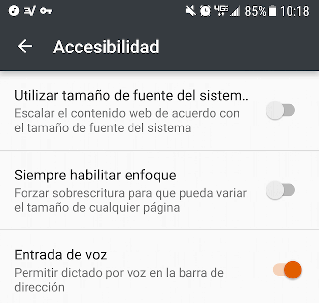
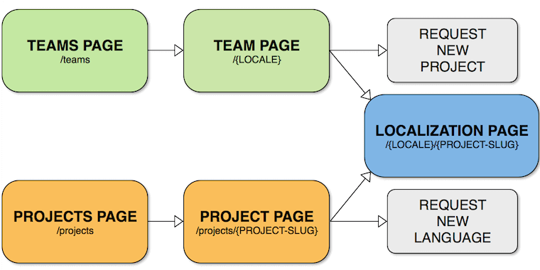
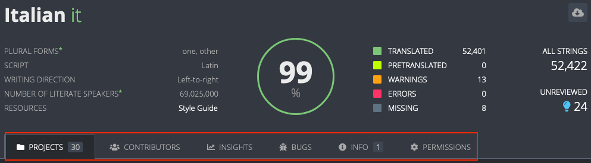
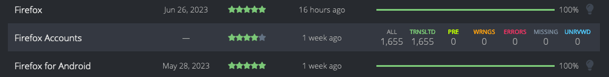
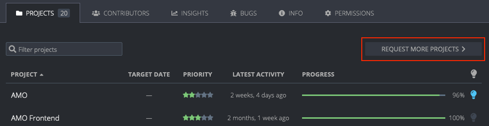
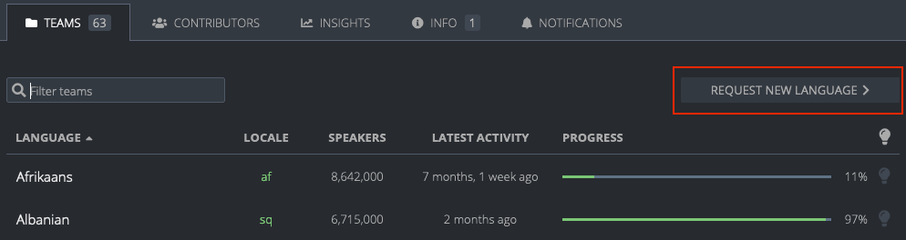
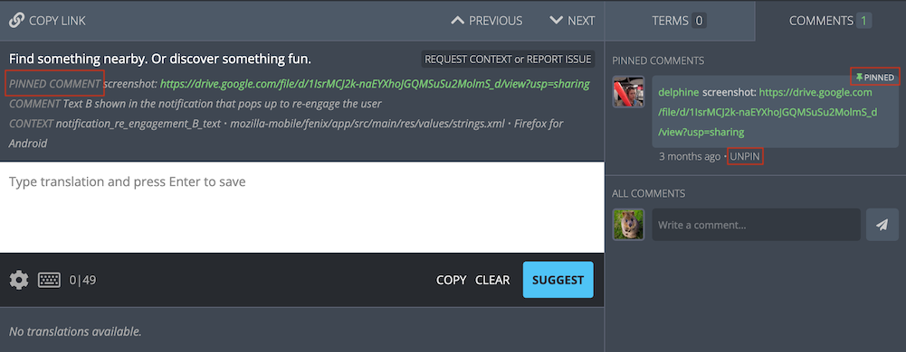
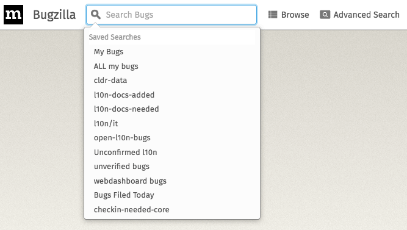

Documentation for Mozilla localizers
Table of contents
Community
Products
How to localize and test Mozilla products:
Tools
Web Projects
Other topics
How to contribute to documentation
Please see the README file in our GitHub repository.
Localization community in Mozilla
Roles within Mozilla l10n communities
Within Mozilla l10n communities, each individual is organized into one of three roles: Locale manager, Translator, Contributor. These roles reflect the community structure within Pontoon as well. Each l10n community has its own unique implementation of these roles, but there is a baseline set of responsibilities and expectations that Mozilla places on those contributing to localization.
This document defines the roles within each l10n community, as well as the responsibilities and expectations of each. We also define what the l10n-driver responsibilities and expectations are with regard to the community as a whole. Here we define responsibilities as what each individual commits to by accepting their role in the community. We define expectations as how you carry yourself in the role.
L10n-drivers (Mozilla staff)
L10n-driver responsibilities and expectations are multifaceted, being that in addition to being accountable to the community, we’re accountable to Mozilla leadership as well as the many teams throughout Mozilla that we support with localization. This section describes how the l10n-drivers are accountable to the community.
Responsibilities
- Mentor new l10n communities through the process of launching a new localized Mozilla product.
- Communicate project updates and participation invitations in primary communications channels, like the dev-l10n mailing list and IRC.
- Respond to reports of CPG violations within the community.
- Create and guarantee a safe, collaborative space for all communities.
- Work with l10n communities to increase the user base for their localizations.
- Perform technical validation of contributions from the community to determine whether to ship contributions.
- Create and maintain tooling that promotes a healthy and simple localization workflow for the community.
- Recognize outstanding contributions made by the community.
- Promote translation and localization best practices within the project.
Expectations
- Promote the growth and health of each l10n community.
- Represent and advocate for the needs of the l10n community to the Mozilla organization.
- Respond positively to ideas for l10n improvements from the community.
- Utilize open communication channels at every opportunity.
Locale manager
Responsibilities
- Establish mentorship practices for new localizers that foster growth and lead to impactful participation.
- Identify and train community mentors in their role.
- Coordinate translation and l10n testing of projects within the l10n community.
- With input and consultation with Translators, evaluate candidates for advanced roles within the community.
- Coordinate and facilitate internal community discussions.
- Create and maintain language resources for the community (e.g., terminology, style guides, etc.).
Expectations
- Open and frequent communication (liaison between l10n-drivers and l10n community) concerning new projects, new deadlines, and community issues.
- Create and secure a safe space for people to participate in l10n in an impactful way.
- Recruit and mentor new localizers.
- Give timely feedback to community mentors and translators.
Translator
Responsibilities
- Submit translations for new source language content.
- Review pending translation suggestions from contributors and provide them with timely feedback that focuses on developing skills.
- In-context l10n testing of all submitted translations.
- Work with managers to create and maintain language resources for the community.
- Report issues concerning source language content issues.
Expectations
- Ensure consistent quality of the project they’re localizing.
- Give detailed feedback to contributors in a timely manner.
- Translate new content regularly.
- Ensure that community style guidelines are being followed in translations that make it to the repositories.
- Keep pending translation suggestion queue to a low number.
- Gracefully accept feedback on their translations from other translators and managers.
Contributor
Responsibilities
- Submit translation suggestions to Pontoon projects for the target language.
- Request and accept feedback from Translators and Managers in the community.
- In-context review (l10n testing) of translation suggestions that have been approved by Translators and Managers.
Expectations
- Gracefully accept feedback on their translations from Translators and Managers.
- Avoid using machine translation.
- Proactively request feedback from Translators and Managers.
- Don’t take shortcuts to increasing leaderboard standings.
- Network and form relationships with others in the community.
Implementation
Each community implements these roles according to their own cultural and unique situations, in accordance with the Mozilla Community Participation Guidelines and Mozilla Leadership Agreements. For example, in some smaller communities, everyone may be Managers and the responsibilities for the role are shared among them. In other communities, there may be one Manager, several Translators, and many Contributors. We respect each community’s rights to implement these roles as best works for them, within the constraints mentioned above.
Evaluating whether someone should move into a more advanced role should be done by consulting with other experienced localizers within the community, not in a vacuum. Typically, a localizer is ready for a role change member when they have proven themselves to satisfy the responsibilities and expectations of their current role and even go above and beyond what’s expected. When considering someone for a role change, consider the responsibilities of the new role and how the candidate localizer will perform in that role. For example, when considering moving a Translator to a Manager, consider if they have mastered the responsibilities and expectations of a Translator first and whether they have the skills to successfully master the responsibilities and expectations of a Manager. Translating fluently and in a timely manner may be applicable to evaluating them as a Translator, but not as relevant to evaluating them as a Manager.
These evaluations should be done regularly and mentored feedback should be given to teach community member regularly.
Reviewing translations within your community
Mozilla encourages a three-stage review process:
- Linguistic review in Pontoon by community.
- Technical review by l10n-drivers.
- In-context localization testing by community and users.
This document explains how to perform the first stage of the review process: review the work of another member of your community and provide constructive feedback.
Attitudes around reviewing translations
Reviewing the translation contributions of another localizer can be controversial. Many attach strong feelings to their contributions, making it very difficult for them to receive feedback and make adjustments to the way they contribute. Reviews are opportunities to ensure high quality contributions while mentoring someone to improve their translation skill set. Reviewers should approach their work with these things in mind:
- Everyone is volunteering their time and looking to have a positive impact in their community.
- Reviews are an opportunity to give clear, actionable feedback about another localizer’s contributions.
- Reviews should be based on objective standards agreed upon by the community and made explicit through the community’s style guide and terminology resources rather than personal preferences. This eliminates the potential for subjective feedback or manipulation through reviews, and thus eliminates potential conflicts within the community.
- Reviewers should avoid using vague, potentially inflammatory language in their reviews (e.g., “This translation is terrible, fix it“).
Localizers should approach receiving feedback with these things in mind:
- Everyone is volunteering their time and looking to have a positive impact in their community.
- Reviews are an opportunity to develop and improve your translation skills. They should be welcomed with an open mind.
- Reviews are a natural and required part of the localization process.
Giving constructive feedback
When reviewing someone else’s translations, feedback should be actionable and based on objective standards. Style guides and terminology resources developed within the community with agreement from its members contain those objective standards. Feedback should include the following elements:
- Actionable criticism.
- Reference to where the translation violates the objective standards.
For example, if a translation contains a spelling error, a constructive piece of feedback would look like this: “There’s a spelling mistake in moniter. The correct spelling can be found in either our official terminology or this section of the community style guide.“
Tools available for giving feedback
Pontoon currently allows reviewers to do the following:
- Approve or reject suggestions.
- Make edits to existing translation submissions.
A more robust feedback loop will be implemented in Pontoon during the beginning of 2018.
Localization of Mozilla products
Documentation regarding testing and localization of the following products:
Documentation about testing localization of Mozilla projects in general.
L10n and Firefox for desktop
Some documentation specific for common tasks regarding Firefox desktop and l10n:
Testing Firefox Desktop
Which build should I test?
As a localizer you will work against Nightly, which means you should be testing a localized build of Firefox Nightly provided directly by Mozilla.
You can download the build from the pre-release download page, the download page for all systems and locales, or directly via FTP (search for your locale code and operative system).
Why Nightly? Because it’s updated twice every day, which means that you can fix an error and verify if the correction was effective within a few hours. It’s definitely a good approach to use this version as your main browser.
At the same time, you, or someone in your team, should be testing also Beta and Release, to make sure updates don’t introduce issues.
Building a localized version of Firefox
If you’re interested in building a localized version of Firefox from source code, please follow the official instructions available in Mozilla Source Tree Docs. Note that you will need to set up the build environment on your system.
How to test
Here are some tips on how to test Firefox once installed in your computer.
Create a new profile
From time to time create a new profile:
- To test that the default searchplugins are still relevant and work as expected.
- To check messages and pages displayed on first run.
- To test dialogs and preferences at the default size.
Search for untranslated strings
- Open all the items available in the main menu and check that they’re properly localized. If you opted to keep Developer Tools in English, the language should be consistent across all the developer tools.
- Check the “hamburger” menu, making sure to inspect subpanels for items displaying the
>symbol. - Open Preferences/Options and navigate through all panels, try to open all dialogs like
Exceptions…. Make also sure to select theCustom settingsoption for History in the Privacy panel. - Log in with you Firefox Account and make sure that all preferences and dialogs are properly localized.
- Check for untranslated strings and errors in the Library (Bookmarks->View all bookmarks…).
- Open a new Private Window and check the content of the page.
- Type
about:supportin the address bar, press Enter, and check for errors or missing translations. - Check the error pages for malware, unwanted software, deceptive website, harmful website. All strings are also visible in
about:blocked. - Check permissions dialogs on this test website.
- Visit secure and unsecure websites, and check the panel displayed when clicking the lock icon.
- Check the Protections panel displayed when clicking the shield icon in the address bar, and the
about:protectionspage for the Protections Report. - Right click on a page and verify all panels in the
View Page Infodialog. - Enable login saving in Logins & Passwords, make sure that
about:loginsis correctly localized and works as expected.
Test the New Tab page and Contextual Feature Recommendations
First of all, make sure that everything is correctly translated in about:newtab. That’s the default page displayed when opening a new tab in Firefox.
In order to test other features available for New Tab, it’s necessary to enable a devtools option: open about:config, search for browser.newtabpage.activity-stream.asrouter.devtoolsEnabled and set it to true. After that, in the top right corner of the New Tab page a small wrench icon will be displayed.
For example, the AS Router Admin page can be used to test contextual feature recommendations (CFR):
- In the Messages section, select to show message for cfr.
- Click the Show button in one of the available options.
The suggestions is displayed at the end of the address bar (first as a bulb icon, then as a “suggestion” tag). Clicking the blue tag will display a doorhanger.
Test webextension permissions dialog
Create a new profile and open about:config in your browser:
- Right click on the list of available keys and create a new boolean key
extensions.webextPermissionPromptsset totrue. - Search for the key
xpinstall.signatures.requiredand set it tofalse. This will allow installing unsigned add-ons. - Open this link, select Download and save the file on your computer.
- Extract the archive.
- Drag each (one by one) of the .xpi files on your browser’s window to display the dialog (you don’t need to actually install it).
Test accesskeys and shortcuts
You can test accesskeys only on Windows and Linux, since they’re not available in OS X.
If your locale uses a non Latin alphabet and opted to keep the English accesskeys, you don’t have anything to check. If you’re localizing accesskeys, you should check that:
- Accesskeys use letters available in the associated label, and are not displayed between parenthesis at the end of the label itself.
- There are no conflicts, which means there are no items in the same menu or preference panel using the same letter. Starting from Firefox 56, it’s not possible to avoid conflicts in preferences: the guideline in that case is to reduce to a minimum the number of times the same letter is used within a panel.
For shortcuts, you should test at least the most common ones. You should never change a shortcut, unless that combination of keys is not available in the keyboard layout commonly used for your locale. For example, in the Italian keyboard the character [ is available pressing Alt and è. A shortcut based on Shift + [ would never work, because it would be read as Alt + Shift + è.
Transvision has a QA view to check both accesskeys and keyboard shortcuts for each locale.
Test certificate error pages
There are several certificate error pages in Firefox, the message displayed can vary depending on the error being bypassable or not:
- SEC_ERROR_UNKNOWN_ISSUER: bypassable, not bypassable.
- SSL_ERROR_BAD_CERT_DOMAIN: bypassable, not bypassable.
- SEC_ERROR_EXPIRED_CERTIFICATE: bypassable.
Other test pages for certificates, both valid and invalid, are available at https://badssl.com.
Test the installer on Windows
Download the installer version and make sure that everything is working correctly. In the FTP folder you have both the Full Installer and the Stub Installer (downloading the package from Internet). You should test both at least once.,
L10n and Firefox for Android
Some documentation specific for common tasks regarding Firefox for Android and l10n:
Firefox for Android - How to localize
Firefox for Android is on a four week rapid release cycle. This means that usually there is a new release going out every four weeks.
Within this timeframe, localizers will usually have approximately four weeks to localize and test their strings for a given release: strings land continuously on Nightly during the first four weeks, and then these strings ride the train to the Beta version. The deadline in Pontoon is an indicator of when the next localization cut-off date is for the upcoming release - in other words, the last day to get localization updates into that release.
Note that all files contained in the project should be localized in order for Firefox for Android to be complete.
Localize Firefox for Android in Pontoon
Localizers should go to the Firefox for Android page on Pontoon, and click "Request New Language". They will be notified by email once the locale is set up and the project is ready to be localized.
When the locale has been set up, localizers can choose it from the list of locales on Pontoon, and start localizing the product from there.
Once localization starts, the locale should become available in Nightly builds within the next few days, which will enable localizers to check and test their work (see this section for more information about testing).
When the locale reaches 70% completion (and given that active testing has taken place), it can be added to the release version.
Testing Firefox for Android
Testing Nightly builds
Once you have localized all the strings needed to complete the Firefox for Android project, and your language is up in Nightly builds, you should start testing! This is the moment to engage as many people as possible: have them use and check out these builds regularly. The more eyes on them, the better.
What to look out for?
(For more detailed explanations about testing, please refer to testing localization of Mozilla projects)
- Language quality.
- Truncated words (cut-off from screen) or overlaps.
- Anything that appears broken in the UI.
- Check out at all the main screens, UI, menus, tabs, new features, etc. Make sure these all look good, that everything is properly translated and appears as expected.
- Font support.
- Check that all searchplugins are working correctly.
If you find issues such as the ones listed above, there are two possible options: fix it by yourself directly via Pontoon, or get a mobile developer to fix it. It all depends what kind of issue you find.
In fact, language quality, truncations, overlaps and unlocalized strings can usually be fixed directly via Pontoon. You can verify that your fix has worked by checking it in the new Nightly version that usually ships the next day.
If the issue is something else, you will probably have to get a mobile developer’s help to fix it. Please file an issue here, and CC the mobile PM in charge (@ followed by the GitHub username, which is currently “delphine”). Once more, please refer to testing localization of Mozilla projects for more details on how to fix different kind of issues.
Please note that it is strongly suggested to start using Nightly builds on a daily basis - and even after your locale is shipping on release version - so that you can get into as many screens as possible and check that everything looks fine.
Also, it is important that builds are tested by people outside the localization team. Ask other people from your community to help test in order to have fresh eyes looking at your work.
l10n-drivers send out regular reminders about merge days, updates on Android projects, schedule and important info on the Discourse Localization category. Please make sure you’re following this category closely so that you get regular updates about which part of the cycle you’re at, when you need to finish your work, and anything relevant to what you are doing.
L10n and Firefox for iOS
Some documentation specific for common tasks regarding Firefox for iOS and l10n:
Adding a new locale to Firefox for iOS
Prerequisites
iOS language support
iOS currently supports two tiers of locales, and a locale must be part of one of these two lists in order to ship on Firefox for iOS. Unlike Firefox for Android, there’s no locale switcher included in the app, so it’s possible to ship only locales that are supported by iOS.
Note that for Tier 2 locales, some menu items in Firefox for iOS can not be translated since they are part of the OS itself. Strings will unfortunately appear in English on the final UI in these cases.
To tell if a locale is supported or not, take a look on an actual device, under the Language Settings of the most recent iOS version available. Tier one locales are the ones listed under “iPod/iPhone/iPad Language”, and Tier 2 locales appear under “Other Language” (or “Add Language” if there are already some languages under that list). If a locale appears under none of these two lists, then it should be safe to assume the language is not supported by iOS.
Request to add a localization
Once it is determined if a locale is supported by the operating system and can ship on Firefox for iOS, a request can be made to work on the project through the usual localization tools.
For Pontoon, go to the Firefox for iOS project page here, and click on the link to request to add a new language to the project.
Shipping
Once pending localization work is complete for a given release, l10n-drivers will work on adding the locale to the list of shipping locales.
Remember to regularly check the Discourse Localization category for latest information and updates on the project.
Testing on iOS for a new release
Localizers currently mostly rely on screenshots for testing. Latest information and updates about Firefox for iOS are generally announced on the Discourse Localization category, which you should follow if you are working on l10n for any of the existing Mozilla products.
Testing with screenshots
Screenshots are currently provided by the iOS team, and the latest iterations can be found right here. Once you find your locale in the list, you should choose and download the .zip file that contains your locale code.
Test builds
The beta version used for testing can be found here. In case the registration does not work from there, localizers can also reach out to the l10n mobile PM in order to be added to these builds (currently delphine at mozilla dot com). Please note you will need an iOS device running v13.6 or above.
Aspects to review
Here is a list of issues you should try to identify when testing the build:
- Language quality.
- Truncated words (cut-off from screen).
- Anything that appears broken on the UI.
- Check out at all the main screens, UI, menus, tabs, new features, etc. Make sure these all look good, that everything is properly translated and appears as expected.
- Font support.
- Untranslated content.
Concerning untranslated content: please note that we currently have two tiers of support in iOS. If your locale is only in the Tier 2 support list, then it sometimes happens that menu items, which are part of the OS itself, may not be localizable - and will therefore unfortunately appear in English on the final UI. To tell if a locale is supported or not, simply take a look on an actual device, under the Language Settings of the most recent iOS version available. Tier 1 locales are the ones listed under “iPod/iPhone/iPad Language”, and Tier 2 locales appear under “Other Language” (or “Add Language” if there are already some languages under that list).
Shipping a brand new locale
The locale is tested and has reached 20% completion, we will add the locale to release builds.
L10n and Focus for iOS and Android
Some documentation specific for common tasks regarding Focus for iOS and Android:
Focus - How to localize
Focus for Android and Focus for iOS are both on a four week rapid release cycle. This means that usually there are new releases going out every four weeks.
Within this timeframe, localizers will have approximately four weeks to localize and test their strings for a given release: strings land continuously on Nightly during the first four weeks, and then these strings ride the train to the Beta version.
It is important to use the Nightly versions for both products, in order to test localization work regularly (see more details about testing here).
Localizing Focus for Android and Focus for iOS in Pontoon
Localizers should go to the Focus for Android page on Pontoon - or the Focus for iOS page on Pontoon - and click Request New Language. They will be notified by email once the locale is set up and the project is ready to be localized.
When the locale has been set up, localizers can choose it from the list of locales on Pontoon, in the same page from which they made the locale request (links above).
Once localization starts, the locale should become available in Nightly builds within the next few days, which will enable localizers to check and test their work. For Nightly builds and testing instructions, please refer again here.
Once the locale starts work and reaches even 1% completion in Pontoon (and assuming that active testing has taken place), it will be added to the release version either in the Google Play Store or the iOS App Store.
Note that Focus for Android strings share common strings with android-components, just like Fenix (Firefox for Android) does. At the moment, android-components strings all live in the Firefox for Android project in Pontoon - these are all the files in your locale folder that start with mozilla-mobile/android-components/. If Firefox for Android is not yet enabled for your locale, you will be asked to complete that work first.
Localization deadlines for projects are noted as Resources in each project page in Pontoon, and the main Project Manager’s contact information can be found there as well.
Testing Focus for iOS and Focus for Android for a new release
Given Focus for iOS and Focus for Android have very similar test procedures, this document will cover both at once. Please note that in certain markets, the app is named “Klar”. For the sake of simplicity, we will only call out the name “Focus” in this document.
Localizers currently mostly rely on screenshots for testing Focus for iOS. Latest information and updates about testing are provided on the l10n Discourse Channel, which you should follow if you are working on localizing any of the existing Mozilla products. Links to iOS screenshots are also provided under the Resources section in Pontoon, at the top of the project page. For Focus for Android and iOS, there are also links to testing builds, if they are currently available.
Testing with screenshots (currently available for Focus for iOS only)
Screenshots are provided by the mobile teams for iOS and appear under the Resources section in Pontoon or in the l10n Discourse channel (see above point for more details).
Test builds
- For Focus for Android testing of either Nightly or Beta, you will first have to join this google group. Please note that you must use the same Google account you use on your device to download apps from Google Play.
For Beta releases: After you have joined the group, opt-in to receive Beta builds, (again with the same Google account) here. Then, download Firefox Focus (Beta) from Google Play here.
For Nightly releases: After you have joined the group opt-in, to receive Nightly builds, (again with the same Google account) here. Then, download Firefox Focus (Nightly) from Google Play here.
- For Focus for iOS Nightly builds, check as well under the Resources section in Pontoon, at the top of the project page - or reach out directly to the mobile project manager (currently delphine at mozilla dot com) to be added to the TestFlight system.
For Focus for iOS, please note an iOS device running v13.6 or above is needed. For Focus for Android, an Android device running v5.0 or above is needed.
Aspects to review
Here is a list of issues you should try to identify when testing the build:
- Language quality.
- Truncated words (cut-off from screen).
- Anything that appears broken on the UI.
- Check out all the main screens, UI, menus, tabs, new features, etc. Make sure these all look good, that everything is properly translated and appears as expected.
- Font support: once you start translating, you should check against the screenshots provided that the fonts used appear correctly.
- Untranslated content.
Concerning untranslated content on Focus for iOS: please note that we currently have two tiers of support in iOS. If your locale is only in the Tier 2 support (which corresponds to the languages under Other Languages in the iOS system settings), then it sometimes happens that menu items and dialogs, which are part of the OS itself, may not be localizable - and will therefore unfortunately appear in the primary OS language on the final UI.
Locale sign-offs
Unless there are visible l10n errors upon review of the locale’s screenshots (e.g., significant truncation, text overflow, encoding, etc.) - and besides what may have already been reported to the mobile team to correct - we will ship any locale that has started to localize (this applies to both Focus products).
Focus for Android issues can be filed here.
Focus for iOS issues can be filed here.
Details about any major updates concerning these products are always announced on the [l10n Discourse Channel - and are reflected in this document as well.
Working on mozilla.org
Some documentation specific for common tasks on mozilla.org
Testing Mozilla.org
- Key links
- What to test
- How to test localized pages on the production server
- Testing content migrated to Fluent
- Testing dynamic pages
Mozilla.org is highly visible because the site houses the basic info of all Mozilla products, conveys Mozilla’s mission, vision, and values it stands for. Additionally, it promotes initiatives and campaigns in time of these events. The localized versions reach 60% of the Mozilla users globally. It is very important that, not only the main pages are localized, they are thoroughly tested before they are launched on production.
Key links
- Production: https://www.mozilla.org/{locale_code}/
- Staging: https://www-dev.allizom.org/{locale_code}/
- Repository: https://github.com/mozilla-l10n/www-l10n
- Pontoon: https://pontoon.mozilla.org/projects/mozillaorg/
It’s highly advised you to ask other community members to conduct peer review not only on Pontoon, but on staging and production. While not all the languages are required for certain projects, each community can opt in the projects at a later time.
What to test
Pre-l10n test
- Have your glossary available as a reference, select mozilla.org as Repository, your language as your Target Locale.
- For terminology consistency, reference the product or site that the page is for, assuming the product or site is localized (e.g.: Firefox, Monitor).
- Have the matching US page up as reference, though some strings may not be identical due to A/B testing.
- Have the project you just localized available for editing in Pontoon.
Linguistic testing
- Translation quality in context.
- Grammar correctness in context.
- Truncation: button text should remain inside the button.
- Header line break wraps at proper place.
- Text not overlapping graphic.
- Terminology consistent with product, and among web pages.
- Brand names remain in English.
- Product names comply to Mozilla guideline and adhere to what the community has agreed to.
- No corrupted characters.
- Click on the links on the page, which should take you to the pages of the same language if they are localized, or they will be redirected to en-US if the pages are not..
- Nav bar terms consistent with the page titles they are linked to (except when Nav bar term is shortened due to space limitation).
- Footer links don’t overlap with one another.
You can make linguistic changes directly in Pontoon.
Functionality testing
- Click the download link, you should be able to download the product in your language, if it is localized, such as Firefox.
- Font support and readability.
- Footer: verify that the translation of the link is coherent and the link is functional.
- Language list: is your language listed as one of the options? Check https://www-dev.allizom.org/en-US to confirm.
- Error page: deliberately type a broken link, such as https://www.mozilla.org/firefox/neu/, check whether 404 page is localized.
- If your language is RTL, make sure that the page layout and text flow in the correct directions.
Compatibility testing:
- Test the page layout in other major browsers and on other platforms.
- Test the page layout on the leading locally developed browser if available.
- Test the page layout on mobile devices of major platforms.
How to test localized pages on the production server
Updated translations are pushed to the production server regularly throughout the day.
- New page: When a brand new page is available for localization, it will be enabled on production when it’s 80% complete. At that point, if it doesn’t reach 100% completion level, the page will be available on production with English content mixed with translation. Before the page is activated in production, use the staging server for testing.
- Activated page with new string update (no tags): The strings will appear in English on production right away. Localized content will be pushed to production as soon as translations are available in the repository.
- Activated page with tagged new string update: The switch to the updated content happens when tagged strings are fully localized. In some cases, there is a defined period of time frame to allow tagged strings to be fully localized. Test the updates on staging server.
- Activated page with template change: In some cases, a page receives a major update that requires a complete rewrite of the template. If this happens, the old template is kept online only for a defined period of time. When removed, it will cause the URL to redirect users to the English version if the intended localized version is not ready.
- Activated page missing too many updates: An activated page falling far behind with multiple updates will create bad user experience. We might decide to disable it manually.
Sync and update frequencies
Updated translations are pushed to the production server regularly throughout the day.
- Pontoon syncs every 10 minutes to the repository.
- GitHub update is pushed to production every 5 minutes.
It is safe to say that it will take less than an hour to see your changes reflected on the production server.
When a project has a firm deadline to meet, it will be communicated through the dev-l10n-web mailing list. Be sure to sign up so you receive important community wide information on web related projects. You can also check out the deadline at page level in Pontoon.
Testing content migrated to Fluent
This section focuses on review and test after a page is migrated to Fluent.
Reviewing and updating brands.ftl
This new file captures all the brand and product names that appear in all the pages on mozilla.org as of now. As a general rule, brands and product names remain unchanged. The exceptions are:
- Account/Accounts in Firefox Account/Accounts
- Sync in Firefox Sync
- Browser in Firefox Browser
If your community decides to translate any of these products or feature names, translate it once and translate it in this file. Be sure to have a consensus among active contributors what the translation should be before updating this file. This practice will ensure term use consistency across all pages.
Please refer to the guidelines for brands and trademarks when reviewing and updating this file.
Reviewing and updating migrated files
The project dashboard contains fewer files than before. This list will grow over time as the mozilla.org team continues migrating from .lang to Fluent. Keep track of what is reviewed and what is pending for a review. Here are a few things to check:
- On the project dashboard, if there is orange color in the status progress bar, click on the orange number of warnings. If the localized string is missing a term reference, chances are, the product or brand name is translated, transliterated or declensed. Insert the variable to replace the translated/transliterated/declensed term.
- Do not translate words in placeables, like term references.
- If there is enough bandwidth within a team, work in pairs, one updates the string as a suggestion, another reviews and approves it.
- Review your changes on production, especially those with brand and product names.
Reporting technical issues
Report issues that can’t be resolved in Pontoon by:
- Filing a bug in Bugzilla and selecting your locale.
- Adding the l10n PM in charge for NI. The l10n PM information appears at the top left corner on the project page.
- Including the file name plus a screenshot and/or URL.
Reporting vendor translation errors
If the mozilla.org project is not in your Pontoon dashboard, but the site is localized into your locale, it is likely being translated by Mozilla staff or a translation vendor. Report any translation errors from Mozilla staff or a translation vendor by:
- Filing a bug using one of these templates and selecting your locale in the component list:
Testing dynamic pages
This section focuses on instructions for testing pages with dynamically generated content. Each page or topic is different in terms of steps or flow. These instructions could change over time to reflect product design updates. Linguistic testing is the main focus. The instructions below are detailed steps to get to the localized content so it can be reviewed in context.
firefox/accounts.ftl
- Click the Sign In to Monitor button, you will be taken to the sign-in page in order to get to the Firefox Monitor site.
- Click on the links under each of the following products:
- Firefox browser
- Firefox Lockwise
- Firefox Monitor
Note: You may see different languages between mozilla.org, the login window, and the products above. If any of these products is not localized in your locale, it will fall back to other languages set as preferred for content language negotiation, assuming any of them is available for the project, or English.
firefox/all.ftl
On the lower left side of the page:
- These two sites are in English only: Check the system requirements and Release notes.
- Click on the Source code link, you will be directed to the topic on MDN site in your language if it is localized.
- The Firefox Privacy Notice document is localized in limited number of languages.
- Click on the Need Help link, you will be directed to the SUMO home page.
On the right side of the page:
- Click on the
?at the end of Which browser would you like to download?, a popup window shows the descriptions of different versions of Firefox available for download. - Click on the
?at the end of Select your preferred installer, a popup window shows the descriptions of different versions of installers available for download. - Under the section of Select your preferred language, check whether your current preferred language is shown by default. Change to a different language, check whether the download summary above the Download Now button corresponds to your new selection.
firefox/new/download.ftl
- Click the Download Now button to check the thank you page that triggers an automatic download.
- Click on the Advanced install options & other platforms link, a pop-up window displays options in various platforms.
- Click on the Download in another language link, you will be directed to the firefox/all page.
- Click on the Fix a problem link, you will be directed to this SUMO article in your language if it is localized.
- The Firefox Privacy Notice document is localized in limited number of languages.
navigation.ftl
This page is activated on production whether it is localized or not. It is not an independent page but a file of shared content. When clicking on any of these topics on the navigation bar, Firefox, Projects, Developers or About, you will see a drop-down window with subcategory topics. Within each of the topics, there is a description and a few links to help you dive deeper further into a topic which takes you to a different page. When reviewing the content, keep in mind the following:
- Not all links take you to a site that’s localizable for all locales.
- Not all products are offered in your locale.
- Brand and product names must remain unchanged.
Testing localization of Mozilla projects
Mozilla encourages a three-stage review process:
- Linguistic review in Pontoon by community.
- Technical review by l10n-drivers.
- In-context localization testing by community and users.
Other documents will cover how the Mozilla approach to the first two stages of the review process. This document covers what to look for when performing in-context localization testing for a Mozilla product or Web project.
Localization testing process
Each Mozilla project has its own process for taking your translations and making them available for you to test. Generally speaking, the process moves like this:
- You submit a translation through Pontoon or directly to version control (Mercurial, GitHub).
- The translation goes through a linguistic review and a technical review.
- Once approved, the translation is automatically pushed into the project’s repository.
- Depending on the project, you’ll need to wait anywhere from 30 minutes to 24 hours to look for your translation in the Mozilla project.
- Once you’ve found your translation, if you see a problem with it, you return to Pontoon to make any necessary corrections.
Pontoon simplifies these steps for some Web projects by enabling the in-context editor (aka WYSIWYG editor). This allows you to see your translations in-context the moment you create them in Pontoon, cutting out the 30 minutes to 24 hours waiting period to test. Most projects do not have this enabled, however, so it is still important to know the typical testing process for your projects.
You might be wondering, “what sort of problems am I supposed to be looking for when I test?” Good question :-) Here’s a list of common localization bugs with screenshots that illustrate the problems in context.
Common localization bugs
Encoding and fonts
Character encoding errors occur when the browser can’t find the correct symbol to display for a character. Normally, you will recognize these errors when you see Unicode replacement characters (�), or strange glyphs, instead of letters or radicals in your language. In some cases the problem can be resolved by changing your browser’s default encoding, in other cases the problem is due to the website not serving content with the right encoding and can be fixed only by the website’s owner.

Fonts that do not include full support for a language’s set of glyphs can present similar issues, for example showing incorrect line spacing (leading), character spacing (kerning), or missing ligatures between characters. In the example below, the kerning of the Cherokee letters is too wide. This may be fixed by using a different font on the site.

Truncation
Truncation happens when a translation is too long to fit in its corresponding space in the user interface. This error can cause problems with transmitting the right meaning to the user by hiding part of the translation from view. It can be corrected in one of two ways:
- The developer increases the UI space to accommodate longer translations.
- The localizer creates a shorter translation that captures the primary message but may not capture secondary or tertiary messages.

String reuse
String reuse occurs when the same string is used in different contexts, and it represents a poor approach to localization.
Consider for example a string like Add to bookmarks: developers might consider a good idea to reuse the same string for both a button label and button tooltip, since it works fine for English. On the other hand, other languages might have completely different needs for these two contexts: while the button indicates an action (imperative verb), the tooltip is used to describe the action associated to the UI element and might need a sentence using a verb with the third person, and the element itself as implicit subject.
String concatenation and empty strings
String concatenation occurs when a developer takes one string, splits it into multiple strings, and tells the code to display these strings one after another.
This is often used to overcome technical limitations, like including a link in the middle of a sentence without exposing HTML tags to localization and injecting unsafe HTML in the UI.
Empty strings are also common when creating a sentence with a link. Typically 3 strings are used: before_link + link + after_link. English doesn’t need the part before or after the link, but that’s useful for other languages, so they’re kept empty in English. It’s expected for some locales to have a completely different behavior than English.
UI layout
Translated text often requires more space than the same text in the source language. For example, when translating between English and German, it’s common practice to expect a length increase of 30%. This can cause problems as wrapping text elements cause different parts of the user interface move around to accommodate a longer string. To fix this, the translator often needs to create a new, shorter translation that captures the primary meaning, but might lose some of the secondary or tertiary meaning.

Mistranslation
Mistranslation occurs when meaning is lost between the source language and the target language. This can be caused accidentally by a lack of context for where a translation will be placed within a user interface (very common in software localization), a translator’s lack of subject matter expertise, or intentionally due to user interface text constraints (e.g., truncation).

Untranslated strings
Untranslated strings appear in a user interface when developers don’t include that string in the string resource files available for localization, but instead in their code. It’s a practice called hardcoding. The best way to correct this error is to make sure that Pontoon does not contain the string for translation (or that it’s not in the string resource files) and then contact developers using Bugzilla to make the string available for localization.

Style bugs
Mozilla’s official style guide serves as a primer to help communities create their own style guides. Style errors are when the tone or appearance of a translation does not match the tone or appearance described in a style guide. These can be corrected by making sure that localizers understand the style guide rules and follow them when translating.

Numbers, date, currency
Every language and region displays numbers, dates, and currency differently. These errors occur when the user sees an incorrect number format, date format, or currency for the language and region of their localized Firefox. This can be fixed by filing a bug in Bugzilla.

XML parsing errors
XML parsing errors (aka “the yellow screen of death”) cause Firefox to display a yellow error page. This is often due to a broken translated string in that localization of Firefox which causes the Firefox build to break. With Fluent, these errors will no longer be relevant.
Exposed variables and placeholders
Variables and placeholders become exposed in the user interface when the translated string has a typo within the variable or placeholder. Because it is not exactly the variable that the software or website expected to find, the system simply displays the variable rather than its value. A very common example of this is with the variable &brandShortName. If that variable is typed correctly in the translation, it will return the variable’s value (in this case, it’s Firefox). If it contains a typo, the user will see the variable instead (e.g., &brandshortname). These are discoverable in the Mozilla localization dashboards and can be corrected in Pontoon.

Broken access keys
Access keys are less effective when the same key is assigned to multiple functions within the same scope (menu, preference panel, etc.). Additionally, if the access key uses a letter not available in the label, it’s displayed near the label between parentheses. Multiple identical access keys in the same context (preference menu, toolbar menu) will require the user to press the letter twice to use it. Ideally, repetitions should be avoided, but that’s not possible in some places, e.g. the reorganized preferences shipping with Firefox 56 and later.
It’s possible to see a list of access keys using letters not available in the associated label in your Firefox localization by looking at this page in Transvision for your locale.

Broken language preferences
Users experience broken website language preferences in Firefox when the accept-lang preferences are left unchanged from the en-US default set of language preferences. This can lead to the user receiving web pages in a language they’re unfamiliar with by default, even when the web page is localized into their native language. It can be fixed in toolkit/chrome/global/intl.properties in the accept-lang setting.
Broken searchplugins
Users experiencing a broken searchplugin will receive a “website unreachable” message when they attempt to perform a search from their awesome bar or search bar. If you discover that a searchplugin is broken, please file a bug with the l10n-drivers.
Broken hyperlinks
Broken hyperlinks occur in a couple of different ways:
- When there are typos in the hyperlink markup, the markup is then exposed to users.
- When the hyperlink links to a site that is not obvious by the text it’s linked to (e.g., linking to the wrong support article according to the link’s context). These can only be discovered by using the website or software regularly and clicking each hyperlink available to ensure that they take the user to the intended website.
What to do when you find an error while testing
Congratulations! You’ve found a bug! No software is perfect and you’re very likely to find bugs while you test your localization. Once you’ve found a bug, you can either attempt to find the affected string in your community’s Pontoon projects or you can file a bug in Bugzilla for that language in Mozilla Localizations :: [your_locale]. Once a fix for that bug is landed, it’s important to test again to be sure that the issue has been resolved.
For project-specific testing guides, please see these pages:
- Addons.mozilla.org (AMO).
- Firefox Desktop.
- Firefox for Android.
- Firefox for iOS.
- Focus.
- Mozilla.org.
- Support.mozilla.org (SUMO).
Documentation for Mozilla localizers
Table of contents
Community
Products
How to localize and test Mozilla products:
Tools
Web Projects
Other topics
How to contribute to documentation
Please see the README file in our GitHub repository.
How to use Pontoon
This document covers how to work with Pontoon from the user’s perspective. While most of the documentation applies to any deployment of Pontoon, the Mozilla instance is referenced frequently as an example. Some limited portions apply specifically to using Pontoon to localize Mozilla projects online.
If you’re interested in administrating Pontoon, please read these documents.
- User accounts and settings.
- Profile page.
- Notifications.
- Team and project pages.
- Search and filters.
- Translation workspace.
- How to translate.
- Example workflow.
- Glossary.
User accounts and settings
Creating an account
While Pontoon can be configured to use different login systems (Django, GitHub, etc.), the Mozilla instance hosted at pontoon.mozilla.org uses Firefox accounts.
To create an account, click on the Sign In button in the top right corner and follow the instructions.
User settings
User settings can be accessed by:
- Clicking the user avatar in the top right corner, and selecting
Settingsfrom the dropdown menu. - Opening the
/settingsURL directly (e.g. pontoon.mozilla.org/settings). - Using the
CHANGE SETTINGSbutton in the Profile page.
Profile picture
The profile picture can be set or updated on Gravatar by clicking the image displayed at the top of the settings page (when hovered, the picture will display an Update profile picture message).
Personal information
In this section it’s possible to update the display name and other personal information:
Display name: it’s the name displayed in Pontoon, for example when submitting a translation or suggestion. It’s also used as the author name when committing translations to version control system (i.e. git or hg repositories).Username: this is currently used to generate the URL for the Profile page (e.g.https://pontoon.mozilla.org/contributors/USERNAME/). If not provided, a hash will be used instead of the username.Contact email address: if provided, this will be displayed in the Profile page instead of the login email address.Bio: a short text that will be displayed in the Profile page.
External accounts
In this section it’s possible to specify the username used in external accounts, like GitHub or Bugzilla. If provided, this information will be displayed in the Profile page.
Visibility of data on the Profile page
Users can determine the visibility of fields containing personal information — like email address or external accounts — and statistics about their contribution. From the smallest audience to the largest, a field can be visible to:
Translators: these are users with translator permissions in Pontoon, independently from the locale. The rationale is that translators need to have access to specific information to either contact a contributor during review, or check stats about their previous contributions.Logged-in users: these are users logged-in to Pontoon, independently from their permissions.Public: this includes all users and not logged-in visitors.
These are the available data fields:
Email address: by default, this field is only visible to translators. Visibility can be expanded to all logged-in users, but it’s always hidden to visitors to reduce the risk of spam. This setting is ignored for team and project managers, as their email address is always visible to logged-in users.External accounts: by default, this data is only visible to translators, but it can be made public.Approval rateandSelf-approval rate: by default, these fields are set as public, but can be limited to translators.
Notification subscriptions
Pontoon can send internal notifications to users for specific events. All notifications are enabled by default, but can be disabled by using the corresponding checkbox.
For more information about this topic, refer to the page dedicated to notifications.
Editor settings
Translation Toolkit Checks (checks for number of sentences, placeholders, HTML tags, punctuation, etc.) are performed when saving a translation. For more information about quality checks, see this document.
Make suggestions allows a translator or a team manager to submit suggestions instead of translations. This setting is also displayed to users with translator permissions.
Locale settings
It’s possible to set the default homepage displayed when visiting Pontoon as a logged-in user. Current options are:
- Default homepage (Pontoon’s homepage).
- A Team page.
Preferred source locales can be used to display a different source locale when translating. In Mozilla projects, the source locale is always English (en-US).
Preferred locales can be used to display a specific group of locales before others in the LOCALES tab when translating strings. In the image below, the user chose to display fr and es-ES before other translations — ordered alphabetically based on the locale name. Since they’re both available the tab displays 2+118, meaning 2 preferred locales plus all others.

User roles
There are five user roles in Pontoon:
- Contributors can only submit suggestions. This is the default role for new users.
- Translators can submit translations directly in a specific locale, and review other contributors’ suggestions.
- Team Managers can perform the same actions as translators, but also manage other users and update their permissions.
- Project Managers don’t have translator permissions, but they act as the point of contact for a specific project. Their name is displayed in the header of Project and Localization pages, and using the
REQUEST CONTEXT or REPORT ISSUEfunction will tag them in a comment. - Administrators can manage Pontoon, e.g. adding or removing projects, and act as Team Managers for all locales.
Managing permissions
A Team Manager can upgrade other users’ permissions within a locale. To manage users, open the team page and select the PERMISSIONS tab (it will only be visible to Team Managers and Administrators).
By default there’s only a General section: permissions defined here will apply to all projects, but can be overridden by custom project permissions.

To move a user to a different column, hover the email address: arrows will appear to move the element to the left or right. Note that a user needs to log in at least once in Pontoon in order to upgrade their permission – simply having an account is not sufficient.
Use the SAVE button to store the configuration before leaving this window.
By default, the TEAM CONTRIBUTORS column will only include users that have already submitted suggestions for this locale. Click ALL USERS (highlighted in red) to display all existing users, then use the search field to narrow down the list.
By clicking ADD CUSTOM PERMISSIONS PER PROJECT (highlighted in orange), it’s possible to add specific permissions for a project. This can be useful to make sure that only some users can submit translations for a specific project, for example if it’s maintained by one person.

Note that:
- The list of translators defined for a specific project overrides the list defined in the
Generalsection. If a user needs to be able to translate all projects, they need to be listed in all custom permissions on top of theGeneralsection. - It’s not possible to override Team Managers, as they will always be able to submit translations in any of the projects available for their locale.
Profile page
The goal of the profile page in Pontoon is to provide a tool to showcase contributions, display useful contact information about the user, and help team managers to organize and grow their communities. A user’s personal profile page can be reached by clicking the avatar icon in the top right corner, and then clicking the profile picture in the dropdown menu, or by using the /profile URL (e.g. pontoon.mozilla.org/profile). Users can also view others’ personal profiles by clicking a user’s profile picture wherever it appears, such as in the list of contributors for a team or project.
The left column includes information about the user:
- Profile picture and name.
- Contact details.
- Information on last known activity (when the user has submitted or reviewed a translation), last login in Pontoon, and the account’s creation date.
- Roles in Pontoon (a user can have multiple roles across different locales).
Users can customize their information and the visibility of specific fields in the settings page (reachable using the CHANGE SETTINGS button).
In the top central section there are two graphs:
- Approval rate shows the ratio between the number of translations approved and the total number of translations reviewed, excluding self-approved translations.
- Self-approval rate is only visible for users with translator rights, and shows the ratio between the number of translations submitted directly — or self-approved after submitting them as suggestions — and the total number of translations approved.
If both graphs are available, it’s possible to switch between them using the selector at the bottom (highlighted in red in the image above)
Right below these graphs, there is a section showing a graphical representation of the user’s activity in the last year. Each square represents a day, while each row represents a day of the week. The brighter the color, the higher the number of contributions on that day.
By default, the chart will show data for all contributions over the last year, but it’s also possible to limit the chart to:
- Submissions.
- Reviews performed.
- Reviews received.
- Submissions and reviews.
The activity log below this chart will display the user’s activity in more detail for the last month. Clicking on a specific square (day) in the chart will only show the activity for that day. Each line item in the activity log is a link that allows to jump to those specific strings in the translation editor.
Notifications
Tracking updates across several projects can quickly become challenging. Pontoon tries to support users across different roles by sending notifications, to make sure important updates don’t get lost. Administrators can also use notifications to send messages about specific projects.
When the user receives a notification, the bell icon near the user avatar in the top right corner will show a badge with the number of unread notifications. Clicking the bell icon will display the latest notifications in a dropdown menu.
Clicking See all Notifications at the bottom will take the user to the complete list of notifications. The same list can also be accessed by opening the /notifications URL directly (e.g. pontoon.mozilla.org/notifications).
Receiving notifications in the browser
It’s possible to receive Pontoon’s notifications directly in the browser by installing the Pontoon Add-on. This add-on is available for both Firefox and Chrome.
Disabling notifications
Pontoon includes several types of notifications and most of them can be manually disabled by users if they don’t find them useful.
Notification types
New strings
This notification informs users when new strings are added to a project. The notification is sent to all users who contributed translations to that project, as soon as new strings are available.
Project target dates
This notification informs users when a project is incomplete and it’s approaching the target date. The notification is sent to all users who contributed translations to that project, the first time 7 days before the target date, then again 2 days before.
Comments
Pontoon distinguishes between two types of comments:
- Translation comments are associated with a specific translation. These comments are displayed under the translation itself.
- Source string comments are associated with the source string. These comments are displayed in the
COMMENTStab in the right column.
For either type of comment, a notification is sent as soon as a comment is added.
For translation comments, the recipients are:
- Authors of other translation comments associated with the same translation.
- Translation author.
- Translation reviewer.
For source strings comments, the recipients are:
- Users with the ability to review translations for the string.
- Authors of translation comments.
- Authors of source string comments.
- Translation authors.
- Translation reviewers.
New suggestions ready for review
This notification is sent once a week to inform reviewers about new suggestions needing a review. It includes information about suggestions that were submitted, unapproved or unrejected over the last 7 days. Recipients include users with permissions to review these suggestions — translator and team managers — as well as the authors of previous translations or comments in the same string.
Review actions on own suggestions
This notification is sent once a day to authors of suggestions, to inform them that their work has been reviewed.
New team contributors
This notification is sent to team managers, as soon as a new user makes the first contribution to their team.
Manual notifications
Administrators can send manual notifications to a project, including all locales or a subset of them. Unlike other types of notifications, this can’t be disabled.
Team and project pages
The Teams page, accessible using the /teams URL (e.g. pontoon.mozilla.org/teams), lists all locales that are enabled in Pontoon. From here it’s possible to access a specific Team page, which contains a list of all projects enabled for the requested locale. Selecting a project from the Team page leads to the so-called the Localization page.
From each locale’s Team page it’s also possible to Request a project. Note that this is a request to add the locale to a project already available in Pontoon, it can’t be used for requesting a brand new project.
The Projects page, accessible using the /projects URL (e.g. pontoon.mozilla.org/projects), lists all projects that are available in Pontoon. From here it’s possible to access a Project page, which shows all locales that are enabled for the requested project. Selecting a locale in the Project page leads to the Localization page.
There is also a special Localization page that allows access to all resources for all projects enabled for a specific locale: /locale/all-projects/all-resources.
The following diagram shows how these pages are organized and connected to each other:

Teams
Teams page
The Teams page lists all locales that are enabled in Pontoon. It can be reached by clicking Teams in the page header (not displayed when translating a project) or by using the /teams URL (e.g. pontoon.mozilla.org/teams). Clicking on a specific locale will open the locale’s Team page.
Team page
Access a specific team’s page by selecting it from the Teams page or by appending a locale code to the end of the Pontoon base URL with /{LOCALE} (e.g pontoon.mozilla.org/it for Italian). This page shows a list of all projects enabled for the locale. Clicking on one of these projects leads to the Localization page.
The page header contains linguistic information about the current locale (plural form, writing direction, etc.), plus an indication of the overall status of completion and statistics. The statistics displayed in the rightmost column are active links to access the Localization page for all projects. For example, select MISSING to see all missing strings across projects enabled for that locale in Pontoon.

There are up to 5 tabs available to all roles, and 1 additional tab for those with Administrator or Team manager roles:
- Projects: a list of all projects enabled in Pontoon for this locale.
- Contributors: a list of active contributors with their statistics, filterable by time (all time, last 12/6/3/1 months).
- Insights: contains data and trends presented in a graphical format about active users, time to review suggestions, review activity, and translation activity.
- Bugs: a list of open bugs for this locale, retrieved from Bugzilla. Note this is specific to Mozilla’s deployment of Pontoon.
- Info: information about the team. Team managers can edit this by clicking on the
EDITbutton. - Permissions: manage user permissions.
The labels and icon in the table header can be used to sort the list of projects. For example, clicking on Priority will sort based on project priority.
Hovering a project in the Projects list will replace the progress bar with a set of detailed statistics (untranslated strings, missing strings, etc.). Note that all these numbers are links, use them to open the project with a filter already enabled, for example to display only missing strings. Clicking ALL accesses All Resources (i.e. all strings in all files) for this project.
The rightmost column in the table will display a blue lightbulb icon if there are unreviewed translations. Note: clicking the lightbulb icon in the table header can be used to sort projects based on the number of unreviewed translations.

Requesting a project
It’s possible to request a project from a Team page. Note that this is a request to add the locale to a project already available in Pontoon, it can’t be used for requesting a brand new project.

Click on REQUEST MORE PROJECTS, select the project to add and then click REQUEST NEW PROJECT (at least one project needs to be selected for the button to be displayed).
An email will be sent to Pontoon’s administrators, and the Project manager in charge of the project will act on the request. Please note that:
- Some projects have a closed list of supported locales, meaning that these projects can’t be requested on Pontoon.
- Some projects can be requested but may not be enabled for practical restrictions related to the project itself (e.g. lack of support for the locale in iOS).
Projects
Projects page
The Projects page lists all projects that are available in Pontoon. It can be reached by clicking Projects in the page header (not displayed when translating a project) or by using the /projects URL (e.g. pontoon.mozilla.org/projects). Clicking on a specific Project page will open the project’s Project page.
Project page
Access a project’s page by selecting it from the Projects page (e.g. pontoon.mozilla.org/projects). This page shows a list of all locales enabled for the project. Clicking on one of these locales leads to the Localization page.
The page header contains useful information about the current project:
- Priority: priority from 5 stars (highest) to 1 star (lowest).
- Target date: set only for some projects, it indicates when the translation is due.
- Repository: link to the repository storing translations for this project.
- Resources: links to useful external resources (e.g. testing instructions, screenshots, etc.). Project managers can set up custom links for each project.
- Project manager: point of contact for this project.
It also includes an indication of the overall status of completion and statistics across all enabled languages.

There are up to 5 tabs available to all roles, and 1 additional tab for those with Administrator roles:
- Teams: a list of all locales enabled in Pontoon for this project.
- Tags: a list of tags defined for this project. This tab will be visible only in projects where tags are enabled. For more information about tags, see this page.
- Contributors: a list of active contributors with their statistics, filterable by time (all time, last 12/6/3/1 months).
- Insights: contains data and trends presented in a graphical format about review activity and translation activity.
- Info: information about this project.
- Notifications: contains functionality to notify those who have contributed to this project for defined locales.
Requesting a locale
It’s possible to request an additional locale for some projects from its Project page.

Click on REQUEST NEW LANGUAGE, select the locale to add and then click REQUEST NEW LANGUAGE.
An email will be sent to Pontoon’s administrators, and the Project manager in charge of the project will act on the request. The same restrictions described in the Requesting a project section apply here.
Localization page
Access a project’s Localization page in two ways:
- By selecting it from the Team page.
- By selecting it from the Project page.
The page header contains useful information about the current project (same as the Project page).

There are 6 tabs available:
- Resources: files available in the project.
- Tags: a list of tags defined for this project. This tab will be visible only in projects where tags are enabled. For more information about tags, see this page.
- Contributors: a list of active contributors with their statistics, filterable by time. Unlike the tab available in the Team page, this only includes contributions to localization of the project for the current locale.
- Insights: contains data and trends presented in a graphical format about review activity and translation activity.
- Project info: information about the project.
- Team info: same content as the Info tab in the Team page.
In addition to the Localization page for each locale/project pair, there is also a special Localization page that allows access to all resources for all projects enabled for a specific locale. This can be accessed from the /{LOCALE}/all-projects/all-resources URL (e.g. pontoon.mozilla.org/it/all-projects/all-resources for Italian).
Insights graphs
The Insights tab, accessible from either the Project, Team, or Localization page, displays data and trends on contributor and localization activity in a graphical format.
The following insights appear on all pages:
- Review activity: shows the number of unreviewed suggestions as a trend line. The Team page also shows the number of peer-approved, self-approved, and rejected suggestions for each month as a bar graph to display the impact of the review process on the number of unreviewed suggestions. New suggestions (hidden by default) can also be shown by clicking
New suggestionsat the bottom of the graph. Hover over a data point to get the detailed number of strings and percentages for that month. - Translation activity: shows the translation completion percentage for the locale as a trend line. The Team page also shows the number of human translations and machinery translations for each month as a bar graph to display the impact of the translation process on the number of completed translations. New source strings (hidden by default) can also be shown by clicking
New source stringsat the bottom of the graph. Hover over a data point to get the detailed number of strings and percentages for that month.
The following insights only appear on Team pages:
- Active users: shows the ratio of active versus total for each user role: managers (Team managers), reviewers (Team managers and Translators), and contributors, filterable by time period (last 12/6/3/1 months).
- Time to review suggestions: shows the average age of suggestions reviewed for a particular month, and the 12 month average. Hover over a data point in the graph to see the exact age in days for that month’s current and 12 month average.
- Age of unreviewed suggestions: this can be accessed by clicking
Age of unreviewedon the bottom of the Time to review suggestions graph. Shows the average age of unreviewed suggestions at a particular point in time. Hover over a data point in the graph to see the exact age in days for unreviewed suggestions for that month.
Note: clicking on the i icon in the top right of each insight will provide detailed definitions for the data shown.
Search and filters
Search
It’s possible to search within the currently selected project using the search field. Searches include strings, string IDs and comments.
Note that searches take active filters into account, for example a search would be performed only on missing strings if that filter was previously selected.
Like in search engines, by default Pontoon will display matches that contain any of the search terms. For example, searching for new tab will match both Open links in tabs instead of new windows and New Tab.
To search for an exact match, wrap the search terms in double quotes, e.g. "new tab". On the other hand, to search for strings that contain double quotes, escape them with a backslash, e.g. \".
Filters
Translation status
Strings in Pontoon can be filtered by their status. A string can be in one of the following statuses:
- Translated: string has an approved translation. The translation is saved to the localized file when using a version control system (VCS).
- Pretranslated: string has been pretranslated but has not been reviewed. Unreviewed pretranslation are saved to the localized file when using a VCS.
- Warnings: string contains issues classified as warnings.
- Errors: string contains critical issues.
- Missing: string doesn’t have any approved translations.
- Unreviewed: string has suggested translations that have not been reviewed yet by someone with the appropriate permissions. Note that, for both translated and missing strings, the suggested translation only exists within the Pontoon database and is not saved to the localized file when using a VCS.
Extra filters
In addition to statuses, additional filters can be used to further refine the list of strings. Extra filters include:
- Unchanged: string is identical to the reference language (normally
en-US). - Empty: string has a translation, but translation contains no content.
- Fuzzy: string is marked as fuzzy in the localized file.
- Rejected: string has rejected translations.
- Missing without Unreviewed: string has
Missingtranslation status and does not haveUnreviewedtranslations.
Filters can be accessed by clicking the icon on the left of the search field.
At this point it’s possible to:
- Click directly on the name of one of the filters. This will select and activate only this filter, and the search field placeholder will change accordingly. For example, clicking on
Missingwill show only missing strings, and the placeholder will readSearch in Missing. - Click on one or more filter icons or user avatars (multiple filters can be applied at once). Hovering over the icons transforms the icon into check marks. Clicking an icon will select that filter and a new button
APPLY X FILTERSwill appear at the bottom of the panel, whereXis the number of active filters. - Click
EDIT RANGEonTRANSLATION TIMEto select a time range. Pick one of the defaults (30 days, 7 days, 24 hours, 60 minutes), or use the date picker (or slider) to adapt the range. Click onSAVE RANGEto store the range as a filter. A new buttonAPPLY X FILTERSwill appear at the bottom of the panel, whereXis the number of active filters.
In this case 3 filters are selected.
Tags
For specific projects it’s also possible to filter strings based on tags. Tags are used to logically group resources based on their priority, allowing localizers to focus their work on important strings first, and project managers to better assess the overall localization status of the project.
In this case, there are 10 tags defined for the project (highlighted in red). Near each tag there is a representation of the priority: like for projects, it goes from 5 stars (highest priority) to 1 star (lowest priority).
Note: translation time, translation authors, and tags are not available when All Projects is selected as a resource.
Understanding Pontoon’s translation workspace
- Main toolbar
- String list and filters
- Main editing space
- Fluent - FTL files
- Translation tools and comments
Pontoon’s translation workspace consists of the main toolbar and 3 columns:
- The left column contains the string list for the current resource with a search field at the top.
- The middle column contains the main editing space.
- The right column contains terminology, source string comments, suggestions from translation memory, machine translation, and translations from other locales.
Main toolbar
The main toolbar at the top of the page allows users to navigate to the dashboards or to change the current resource.

Clicking the locale name will open the Team page for that locale, while clicking the project name will open the Localization page for that project.
Clicking on the current resource (or All Resources) will display a list of all resources available for that project. It’s possible to search for a resource, and click one to load only the entities included in it. Clicking All Resources at the bottom of the list will go back to display all resources, while All Projects will show entities for all projects under the selected locale.
A progress chart showing the translation status of the current resource is located to the right of the resource name. A more detailed breakdown is displayed when clicking the chart.

The notifications icon, represented by a bell, is located on the right side of the main toolbar. By clicking the bell icon, users can view a list of the latest notifications they received.
The profile menu is located at the far right of the main toolbar. Clicking the profile image will reveal a dropdown menu where users can perform several actions, like navigate to their profile page, download and upload translations, etc.

Note that some profile menu items are only available to users with specific permissions.
String list and filters
The left column displays the list of strings in the current project resource. Each string is represented by:
- A colored square that identifies the string status (i.e. Missing, Translated, etc.).
- The source string.
- The approved translation or the most recent suggestion if available.

Color legend:
- gray: translation is missing.
- green: string is translated.
- light-green: string is pretranslated.
- orange: translation has warnings.
- red: translation has errors.
When a string is selected in the sidebar, a small icon with four arrows is displayed near the checkbox: this can be used to show strings that surround the selected string in the resource, bypassing the current filter. This is often helpful to provide more context for the localization, especially when translating missing strings.

At the top of the sidebar, the user can access Pontoon’s search and string filters.
Main editing space
The main editing space in the middle column is where translation takes place.
String navigation
The top of this space contains a string navigation interface. It’s possible to navigate sequentially through the strings by clicking the PREVIOUS or NEXT buttons located at the top of the editing space, or by using keyboard shortcuts (ALT + arrow down or up). A link to the current string can be copied to the clipboard using the COPY LINK button.
Source string
Below the navigation interface, the user can view the source string, any comments present in the resource regarding the string, and the resource path where the string is located.
In the same area, the REQUEST CONTEXT or REPORT ISSUE button can be used to request more information about the current string: it will focus the COMMENTS section, and mention the project manager for the project.
Editor
The editor is located in the middle section of the column, and it’s where users can input or edit their translations.
In the lower-right side of the editing space, it’s possible to COPY the source string to the editor, CLEAR the area where translations are typed, and SUGGEST or SAVE the translation by clicking the corresponding button. This area is also used to display warnings and errors when submitting a translation.
In the lower-left side:
- Clicking the gear icon allows users to toggle
Translation Toolkit checksorMake suggestions, and navigate to the user settings. Note that access to some settings is restricted by user permissions. - Clicking the keyboard icon displays a list of available shortcuts.
- The numbers displayed to the right of the keyboard icon (e.g.
50|59) are the number of characters in the target and source string.
Read-only projects
A project could be enabled in read-only mode for some locales: their translations will be available to other languages in the LOCALES tab, but it won’t be possible to change or submit translations directly in Pontoon. In this case, a note is displayed in the bar below the editor, and all other controls are hidden.

Translation list
The space below the editor displays the list of translations for the current string.
Each entry contains:
- The name of the translator and their profile picture (linking to their profile).
- How long ago the entry was submitted (hover over to see the full date and time as a tooltip).
- The translation.
- Icons indicating translation status (see below).
- Translation comments.
Icons to the right indicate the status of each translation:
- The solid green circle with checkmark indicates that the translation has been approved.
- The outlined lime green circle with checkmark indicates a pretranslation that has not yet been reviewed.
- If both icons are gray, translation has been suggested but not yet reviewed.
- The red cross indicates that the translation has been rejected. The entire element will look opaque.
- The trashcan, available only for rejected translations, can be used to completely delete a translation. Those with the contributor role can only remove their own translations, while those with a translator permissions can delete anyone’s.
In the screenshot above, the first item is the approved translation (green checkmark), while the other two are rejected suggestions. By clicking the COMMENT button it’s possible to add a translation comment to this specific translation. To mention another user in the comment, start typing @ followed by their name.
If there is already a comment associated with a string, the button will display the number of comments (e.g. 1 COMMENT for the first rejected suggestion).
Viewing translation differences
The DIFF option appears if there are multiple translations for one string. Toggling DIFF compares the text to the current approved translation, or the most recent suggestion if no translation has been approved yet. Text highlighted in green indicates content that has been added, while strikethrough text in red indicates removed content. Toggling DIFF again will display the original string.

Fluent - FTL files
When working on FTL (Fluent) files, the editing space will look slightly different.
In the example above, the string has a value and an attribute title. Both are displayed in the source section (highlighted in red), and available as separate input fields in the editor (highlighted in orange).
The following image is an example of a string with plurals: while English only has two forms, plural and singular, other locales can have a different number of plural forms. In this case, Russian has three forms (highlighted in orange).
In the bottom left corner, the FTL button (highlighted in yellow) allows to switch between the standard UI (Simple FTL mode) and the Advanced FTL mode, where it’s possible to edit the original syntax directly, as you would in a text editor. For details on the Fluent syntax, see Fluent for localizers.

Note that the FTL button’s text is green when in Advanced FTL mode.
Translation tools and comments
Built-in translation tools are located in the rightmost column.
Terminology
The TERMS tab shows the definition and translation of a term, in case the source string includes matches with the built-in terminology. The matching term is also highlighted in the source string. A popup appears on click showing the definition and translation for a term.

Source string comments
The COMMENTS tab is used to display existing source string comments, or add new ones. Source string comments, unlike translation comments, are associated with the string: it’s possible to have a comment in this section even if the string doesn’t have any suggestion or translation yet.
They’re designed for team members to have a conversation about the source string, for example to clarify its meaning, or to get more information from project managers.
Administrators can pin or unpin a source string comment: this pinned comment will be displayed along existing comments in the editing area as PINNED COMMENT, and users will receive a notification.

The screenshot above shows a pinned comment, and the command to unpin it.
Machinery
Machinery shows possible translations from a variety of sources. These sources include:
- Pontoon’s internal translation memory.
- Microsoft Terminology.
- Google Translate.
- SYSTRAN.
- Caighdean.
- Bing Translator (not currently enabled on pontoon.mozilla.org).
In addition, the user has the ability to search for translations containing words via Concordance search.
In the tab, the number of entries is visible alongside the MACHINERY title in white. If any of the machinery matches are from translation memory, the number of matches will appear separately in green. For example, the screenshot below shows 2+1, where the green 2 represents the two matches from translation memory and the 1 represents a machinery entry from Google Translate.

At the top of each entry, a diff view compares the current source string and the source string from the machinery entry. Strikethrough text highlighted in red indicates text that is present in the source string but not in the machinery source string, while text highlighted in green indicates text available only in the machinery source string.
To the right of the entry, the number in green shows the percent match between the machinery source string and the current source string. The higher the percentage, the more likely machinery is to be useful; a 100% match indicates that the sources for the current string and for the machinery string are identical.
The origin of the machinery entry is listed in gray above the source string. Clicking the gray text will open the origin in a new window. The green superscript to the right indicates the number of matches for the entry in the translation memory.
Be careful when using the machinery tab as suggestions may not match the source string for the project being translated. Even if the source strings match, the context in which strings are used may not be the same. This could lead to incorrect or unnatural translations. Always keep the meaning and purpose of the string being translated in mind when using the machinery tab.
Concordance search
Concordance search allows users to search across all projects in Pontoon. Users can search for translations using strings in either source or target language. Matching results are displayed with the source string, translation, and project name; clicking a result will automatically fill the translation into the editor. Note that the search does not need to be related to the current string or project.

Stand-alone machinery
Pontoon machinery is also available as a stand-alone web page. Use the Machinery link in the main navigation to access the page (this is not accessible from the translation workspace).
To use the machinery, select the target locale from the dropdown menu to the right of the searchbar. Then input the English source string into the searchbar and press Enter. This will display all matching machinery entries. Information is organized exactly as in the translation workspace.
Locales
The locales tab shows approved translations from Pontoon projects in other locales.
Next to the LOCALES title, the number of available entries is visible. The number for preferred locales is green, while the number for all other locales is in gray.
Users can select locales to appear at the top of their Locales tab as a preferred locale. To add a locale to the preferred locale list, access the user settings page.
Entries in the LOCALES tab above the green line are preferred locales. Non-preferred locales are displayed below the green line, sorted alphabetically by language name.
Each row displays the translation for the source string in the selected locale. Above each entry, the language name is visible in gray, while the locale code is displayed in green.
The LOCALES tab is useful for seeing what general style choices are made by other localization communities. When encountering a difficult string, a translator can use other locales as a source of inspiration.
Note that, when using the LOCALES tab, the translator should always opt for fluency in their own locale. Languages vary linguistically on many levels. The locales tab can be extremely useful, but should be used carefully, and rarely as the sole translation resource for translation.
How to translate
This document describes briefly how to translate and review strings in Pontoon. The documentation includes dedicated pages for learning more about Pontoon’s interface and translation tools.
Translating strings
When a string is selected in the sidebar, users can input a translation using the editor available in the middle of the page. Note that, if the string already has a translation, the editor will be pre-populated with text that the user can modify.
Depending on the current translation mode, the UI will look slightly different.
When the user is in Suggestion Mode — manually selected, or because the user doesn’t have permissions to submit translations directly — a blue SUGGEST button will be displayed in the lower-right side of the editing space.
To suggest a translation, the user can input the text in the editor and click SUGGEST. The suggestion will then be displayed below the editing space and in the sidebar where, in the case of multiple suggestions, only the most recent one will be displayed.
Note that a suggestion exists only in the Pontoon database, and it’s not added to the translation memory. For projects using version control systems, the translation is not stored in localized files outside of Pontoon.
When the user is in Translation Mode, a green SAVE button will be displayed instead of SUBMIT. When saving a translation:
- The translation will be displayed directly below the editing space and in the sidebar.
- The translation will be stored in the version control system (where applicable).
- All pending suggestions or pretranslations will be rejected.
Manually switch to suggestion mode
Even if the user has permissions to add translations directly, submitting suggestions to be reviewed by another person helps ensure quality. To manually switch to Suggestion Mode, click the settings icon in the lower-left side of the editing space and select Make suggestions. The SUGGEST button will be displayed in the lower-right side of the editing space, replacing the green SAVE button.
To switch back to Translation Mode, click the settings icon again and turn off Make suggestions.
Reviewing strings
To review a suggestion or pretranslation, search for unreviewed or pretranslated strings in the sidebar.
If the current translation is acceptable, either click on the APPROVE button in the lower-right side of the editing space, or click on the approve icon to the right of the text. This will transform the suggestion or pretranslation into an approved translation. In the case of suggestions, the approved translation will also be stored in the version control system (where applicable).

If the current translation is not acceptable, it can be rejected by clicking the reject icon to the right of the suggestion. After rejecting a suggestion or pretranslation, it’s also possible to delete it completely by clicking the trashcan icon. In the case of pretranslations, the rejected text will be also removed from version control systems (where applicable).
Alternatively, it’s possible to provide a different suggestion: turn on Make suggestions, edit the translation as appropriate, and click SUGGEST. This will add the translation as a new suggested string.
Quality checks
When submitting a translation or suggestion, Pontoon performs automated quality checks. They are meant to help localizers identify issues with punctuation, capitalization, variables, etc. before translations are saved. Failures for these checks are stored in the database, and it’s possible to filter strings with issues from the search bar.
There are two types of quality check failures: errors and warnings.
Errors
Errors cover critical issues that would cause the string to be removed from products. For this reason, errors cannot be bypassed by localizers - the button to submit a translation is removed and the error needs to be fixed before the translation can be saved.
Examples include exceeding the maximum string length, incorrect syntax, etc. Errors are denoted with a circled X with red background.
Warnings
Warnings are displayed when potential issues are detected in the string, but it’s not certain that they will create problems in products (unlike errors). For that reason, warnings can be bypassed by localizers, allowing them to save a translation anyway.
Examples include missing punctuation, differences in number of sentences and capitalization, etc. Warnings are denoted with a circled X with gray background.

Certain types of checks reported by the Translate Toolkit library may result in many false positives. For this reason, they can be completely disabled.
Performing batch actions on strings
Mass actions can be performed on multiple strings at once by clicking on the square to the left of any string in the sidebar. When clicked, the square will show a checkmark and the editing space will show the mass action panel. Note that mass actions are only available to users with translator permissions.

To select a range of strings, select the first one and hold SHIFT, then select the last one. To select all strings, click SELECT ALL on the top-right of the mass action panel. The number of selected strings will appear on the top-left, next to the Exit icon.
To return back to the default editing space, click the Exit icon on the top-right of the mass action panel.
In the REVIEW TRANSLATIONS section, the user can approve or reject suggestions for all selected strings. Upon clicking APPROVE ALL or REJECT ALL SUGGESTIONS, the label of the button will be replaced with the number of affected translations.
Note that APPROVE ALL accepts the latest suggestion, but doesn’t reject other suggestions if available.
In the FIND & REPLACE IN TRANSLATIONS section, the user can input the text to search for, and the text to replace it with. This is a basic find and replace feature that will work only on the selected strings.
Downloading and uploading translations
Pontoon provides the ability to download and upload translations, including terminology and translation memories. To access these features, click on the profile icon in the top-right corner of any page. Note that the user must be in the translation workspace for the download/upload options to be displayed in the dropdown menu.

Anyone can download terminology (.tbx), translation memory (.tmx) and translations, while only users with translator permissions can upload translations. When downloading translations:
- The resource currently selected is downloaded in its original format, it’s not converted in any way.
- If the project contains multiple files, a ZIP of all files is downloaded. If the project contains more than 10 files, only the file currently translated will be downloaded.
When uploading translations to Pontoon:
- Translations different from the ones in Pontoon will be imported and attributed to the user uploading the file.
- Translations matching the ones in Pontoon will be ignored.
Downloading .tbx and .tmx files via command line
Terminology (.tbx) and translation memory (.tmx) files can grow big in size over time. To download files via command line it is advised to use curl command with the --compressed flag, to reduce download times and avoid request timeouts.
Here’s an example command to download German (de) .tmx file across all projects from pontoon.mozilla.org:
curl -o de.all-projects.tmx --compressed https://pontoon.mozilla.org/translation-memory/de.all-projects.tmx
Note that Terminology files can be downloaded in the TBX 2008 (v2) format in addition to the default TBX v3 format available via the profile menu.
Here’s an example command to download German (de) .tbx file in the TBX 2008 (v2) format from pontoon.mozilla.org:
curl -o de.v2.tbx --compressed https://pontoon.mozilla.org/terminology/de.v2.tbx
Example workflow
AB workflow
This workflow utilizes the full power of Pontoon’s online translation features. It assumes that at least two translators are available for the project; however, this workflow can be completed by a single translator in an AA workflow performing each phase or by multiple translators in an ABCn workflow repeating Phase 3.
Phase 1: translation
Translator A
- Log in to Pontoon.
- Browse to the project.
- Using filters select
Missingto display only the strings currently missing a translation, marked as fuzzy or containing errors. - Access personal settings by clicking on the gear icon below the editing field and turn on
Make suggestions.
Note that new contributors who have not yet been granted Translator permissions will only have the ability toMake suggestions, which will be enabled by default. - For each string, type a translation and save it with the blue
SUGGESTbutton. The string will be stored and displayed under the editor. Each translation submitted shows the name of the author and when it was saved.- If something is unclear or there is a question about the source string, use a source string comment to ask the Project manager.
General notes:
- Rely on Pontoon’s translation tools to ensure consistency and make the translation process faster.
- When using Firefox, make sure to have a dictionary installed for the translation language, and that spell checking is enabled in the translation text area.
Phase 2: review suggestions
Translator B
- Log in to Pontoon.
- Browse to the project.
- In filters select
Unreviewed, to isolate the strings previously suggested by another translator. - Review the suggested strings.
- If a suggestion is acceptable:
- Confirm it as an approved translation by clicking the green
SAVEbutton or the checkmark icon near the string in the list below the editor (it turns green when hovered).
- Confirm it as an approved translation by clicking the green
- If a suggestion is not acceptable:
- Switch to Suggest mode. Edit the translation in the editing space and click the blue
SUGGESTbutton. The newly suggested version will not overwrite the translator’s work, but instead will appear at the top of the list under the editor.
- Switch to Suggest mode. Edit the translation in the editing space and click the blue
- Use translation comments to discuss a translation with the other translator. For example, discussing possible alternate translations or asking questions when something isn’t clear.
- If a suggestion is acceptable:
Phase 3: implementing QA
Translator A
- In the project, select
Unreviewedfrom the filter search. Then compare the initial entries with those of the reviewer for changes. - Review the remaining strings:
- If in agreement, confirm the reviewer’s version by clicking the green
SAVEbutton or the checkmark icon near the string in the list below the editor (it turns green when hovered). - If suggesting an alternative, type it into the editor, then hit the blue
SUGGESTbutton. Then resubmit it to the reviewer from Phase 2. - Reject suggestions not considered suitable by clicking on the cross icon near the string (it turns red when hovered).
- If Translator A does not have the Translator or Team manager role, they will be unable to confirm or reject a suggestion. In that case, use translation comments to discuss the translation with the reviewer.
- If in agreement, confirm the reviewer’s version by clicking the green
Repeat, switching translators, until a consensus is reached.
Glossary
Explanation of common terms and concepts used across documentation.
- Comment
- Fuzzy
- Locale
- Permission
- Resource
- Terminology
- Translation
- Translation memory
- Translation mode
- Version Control System
Comment
Comments can be used, for example, to discuss possible translations with other team members or request more information from project managers.
Pontoon supports two types of user comments:
- Source string comments are associated with the source string and displayed in the
COMMENTStab in the right column. - Translation comments are associated with a specific translation and displayed under the editor in the translation list.
User comments should not be confused with Resource comments, which developers can add directly to the resource file. This type of comment is displayed in the editing area, along with other information like the resource path and context.
Fuzzy
fuzzy is an internal state available only if the source file is a gettext (.po) file. A string can be marked as such in a few cases:
- The reference text changed after the string was already translated.
- The string has been manually marked by translators because it needs review.
- New strings were merged in the localized files, enabling the option to match existing translations (also called “fuzzy matching”).
In all these cases a translation exists in the file, but is marked as fuzzy (equivalent to “need review”) and not used by the website or application. For more information, read the documentation about Fuzzy Entries in gettext.
Locale
A locale is the combination of a language and a region, represented in Pontoon by a locale code. For example, American English is referred to as en-US, where en stands for the language (English), and US for the region (United States). In some cases, the region is omitted, because the language is mostly spoken in one region.
In Pontoon, each locale maps to a team.
Permission
Users in Pontoon can have different permissions depending on their role:
- Translators can either submit approved translations directly or review suggestions from other users. Unlike in some other Translation Management Systems, this is a single permission in Pontoon, and it’s referred to as Translator permission.
- Team managers have translator permissions, but can also change permissions assigned to other users (i.e., ”promote” or ”demote” them).
Resource
Resources are localization files within a repository (see version control system) used to store source content and translations. They can be in different file formats but generally follow the same key-value structure, where the key (displayed as Context in the Source string panel) is a unique identifier and the value is a text snippet that needs to be translated.
Terminology
Terminology — sometimes also referred to as a Glossary — is a list of terms and their definitions. Pontoon will highlight any terms in the source string and show their definitions as well as translations into the target language.
TBX, or TermBase eXchange, is a standard file format used in the translation industry to represent and exchange terminological information. Pontoon Terminology can be downloaded in the TBX format.
Translation
A translation is any submission of the target content. There are several types of translations:
- Approved translations: translations submitted directly or approved by users with translator permissions.
- Suggestions: translations that have not been reviewed yet (pending).
- Pretranslations: translations that have been authored by the pretranslation feature.
Translation memory
Translation memory is a list of all approved translations for any string. It can be leveraged to provide suggestions when translating new content.
TMX, or Translation Memory eXchange, is a standard file format used in the translation industry to represent and exchange translation memories. Pontoon Translation memory can be downloaded in the TMX format.
Translation mode
Depending on their settings and permissions, users will be able to submit translations directly (Translation Mode), or only submit suggestions (Suggestion Mode).
Contributors — users without translator permissions — can only access Suggestion Mode, while translators and team managers can manually switch between the modes.
Version Control System
Most projects store source content and translations outside of Pontoon, in repositories that use version control systems (VCS). The most popular are git and Mercurial (hg).
Pontoon periodically (usually every 10 minutes) imports source content and translations from these repositories and writes translations back. This process is referred to as Sync.
Pontoon also supports the so-called DB projects, where source content and translations are stored in Pontoon’s internal database (DB).
Fluent for localizers
Fluent is a localization system, previously known as L20n, designed at Mozilla to unleash the expressive power of the natural language. The format used to describe translation resources used by Fluent is called FTL.
This section of documentation includes a brief introduction to Fluent’s syntax for localizers and covers specific details regarding Mozilla’s implementation (branding rules, additional functions available in Gecko, etc.). For a detailed overview of Fluent, consult the official documentation.
Introduction to Fluent syntax
Basic syntax
A Message represents the basic unit of translation in Fluent. This is the simplest form messages can take:
welcome-msg = Hello, World!
welcome-msg is the message identifier (or message ID), and Hello, World! is the value of this message.
Messages can contain variables, for example:
welcome-msg = Welcome { $user }
$user is the name of the variable, and should never be translated. The fragment included between curly braces is called a placeable, and can be moved within the text. For example, the message above would be translated in Italian as follows, leaving the placeable unchanged:
welcome-msg = Benvenuto { $user }
Messages can also reference other messages. In this case, the placeable won’t include the $ sign, simply the message identifier:
menu-settings = Settings
help-menu-settings = Click { menu-settings } to save the file.
A Term is a special category of Message:
- Terms have identifiers starting with a dash, e.g.
-brand-short-name. - They can’t be called directly in the source code, but only referenced within other messages.
- Each localization can add or remove attributes, regardless of the reference language (typically
en-US).
For example, a term is used to define the Firefox brand name. For more details, see this document.
-brand-short-name = Firefox
close-msg = Close { -brand-short-name }
Attributes
For a single HTML object there might be multiple messages to localize: for example, a button could have a label and an accesskey, a link could have a text but also a tooltip. Such objects can be localized defining multiple attributes within a single message. For example, in the case of a button:
login-button =
.label = Login
.accesskey = L
The message login-button doesn’t have a value, but has 2 attributes defined: label and accesskey. There are a few things to highlight in this FTL fragment:
- Attribute definitions must be indented and start with a period.
- There is an equal sign following the message identifier, even if there is no value (i.e. the value is Null).
- All attributes of messages found in the reference language – typically
en-US– must be present in the localization. This will be enforced by tools like compare-locales, which will warn on missing or obsolete (only available in the localization) attributes.
instructions-link = Log out
.tooltip = Disconnect from this account
In this case, instructions-link has a value (Log out) and a tooltip attribute (Disconnect from this account).
It’s important to note that, in FTL files, indentation is part of the syntax; indenting elements incorrectly will lead to parsing errors.
Selectors and plurals
With the select expression, a single message can provide several alternatives. The selected value will depend on the value of a variable, another message attribute, or a function.
The most common use of select expressions is for plural forms:
emails = { $unreadEmails ->
[one] You have one unread email.
*[other] You have { $unreadEmails } unread emails.
}
Notice that both the variants and the closing curly brace are indented. The same message can also be written as:
emails =
{ $unreadEmails ->
[one] You have one unread email.
*[other] You have { $unreadEmails } unread emails.
}
One of the variants starts with a *: that indicates the default option, and it must always be defined in a select expression. The part before -> is called the selector.
In this case, the message displayed will change based on the numeric value of $unreadEmails. For plurals, the variant key can either be a perfect match to a number or one of the CLDR plural categories. This allows to define special cases, beyond the number of plurals expected for a language:
emails = { $unreadEmails ->
[one] You have one unread email.
[42] You have { $unreadEmails } unread emails. So Long, and Thanks for All the Fish.
*[other] You have { $unreadEmails } unread emails.
}
Note how the [one] form in English doesn’t explicitly use the variable, in order to display the word one instead of the digit 1.
In plural messages is always possible to expose the number, even if the reference language doesn’t; the name of the variable is defined at the beginning of the select expression (in the selector), in this case $unreadEmails. The first example in this section can be translated in Italian using $unreadEmails in both forms:
emails = { $unreadEmails ->
[one] C’è { $unreadEmails } messaggio non letto.
*[other] Ci sono { $unreadEmails } messaggi non letti.
}
Terms and parameterized terms
As described at the beginning of the document, terms are a special type of messages. They are used to define translations of common words and phrases, which can then be used inside of other messages. They can be recognized because of the identifier starting with a dash, e.g. -brand-short-name. Terms can also define additional language-specific attributes which are not present in the reference language (typically en-US).
While in most cases terms will have a single value, it’s also possible to define multiple values associated controlled by a parameter. These parameterized values can be used to define grammatical cases or any other language-specific modifications of the value required by the grammar of the spelling rules. When referencing a term from another message, you can optionally specify a parameter and its value with the -term-identifier(parameter: "value") syntax.
Consider the following example in English:
-fxaccount-brand-name = Firefox Account
sync-signedout-account-title = Connect with a { -fxaccount-brand-name }
In Italian this can become:
-fxaccount-brand-name =
{ $capitalization ->
[lowercase] account Firefox
*[uppercase] Account Firefox
}
sync-signedout-account-title =
Connetti il tuo { -fxaccount-brand-name(capitalization: "lowercase") }
Similar to select expressions, you must define a default value, identified by *. Also notice that parameter names are arbitrary, and don’t need to be in English. To get the default value (uppercase in the example), the term can be called without any parameter ({ -fxaccount-brand-name } or { -fxaccount-brand-name() }).
Parameters can also be nested for more complex situations, for example:
-sync-brand-short-name =
{ $case ->
*[nom] { $capitalization ->
*[upper] Синхронізація
[lower] синхронізація
}
[gen] { $capitalization ->
*[upper] Синхронізації
[lower] синхронізації
}
[dat] { $capitalization ->
*[upper] Синхронізації
[lower] синхронізації
}
[acc] { $capitalization ->
*[upper] Синхронізацію
[lower] синхронізацію
}
[abl] { $capitalization ->
*[upper] Синхронізацією
[lower] синхронізацією
}
}
use-firefox-sync =
Підказка: При цьому використовуються окремі профілі. Скористайтеся
{ -sync-brand-short-name(case: "abl", capitalization: "lower") }
для обміну даними між ними.
Again, not all parameters need to be specified at all times when referencing a term. If some (or all) parameters are omitted, the corresponding default values will be used. In the example above, { -sync-brand-short-name(case: "abl") } will result in the uppercase Синхронізацією translation because upper is defined as the default value of the ablative case.
Functions
Functions can be used in Fluent to format data according to the current language’s rules, or can provide additional data to fine tune the translation.
Fluent includes some generic built-in functions, like NUMBER and DATETIME, for number and date formatting, respectively. Such functions can be used in placeables and selectors. For example:
dpi-ratio = Your DPI ratio is { NUMBER($ratio, minimumFractionDigits: 2) }
your-score = { NUMBER($score, minimumFractionDigits: 1) ->
[0.0] You scored zero points. What happened?
*[other] You scored { NUMBER($score, minimumFractionDigits: 1) } points.
}
This document describes additional functions available in Gecko products. Please refer to this document for references about the terminology used.
PLATFORM
PLATFORM is a function that allows localizers to tailor messages to the current platform. Allowed variant keys are: windows, macos, linux, android, other.
For example, Firefox settings are currently called Options in Windows, Preferences in macOS and Linux. Strings can be differentiated in Fluent by defining a message as follows:
pref-page =
.title = { PLATFORM() ->
[windows] Options
*[other] Preferences
}
PLATFORM() is used to determine the variant to use in the select expression, other is defined as default. If a variant isn’t defined, for example for linux, it will fall back to the default value.
The following example uses the PLATFORM() function for each attribute:
download-choose-folder =
.label =
{ PLATFORM() ->
[macos] Choose…
*[other] Browse…
}
.accesskey =
{ PLATFORM() ->
[macos] e
*[other] o
}
Brand names
Brand names, like Firefox or Sync, are stored as Terms in dedicated files, and shared across the application.
Unless indicated otherwise in comments, the current policy is that brand names can’t be:
- Declined to adapt to grammatical case.
- Transliterated.
- Translated.
They need to be kept in English, and sentences adapted as needed to fit the undeclined name.
For example, a term -brand-short-name is provided in browser/branding/official/brand.ftl
-brand-short-name = Firefox
And it can be referenced in other messages as follows:
close-msg = Do you want to close { -brand-short-name }?
-brand-short-name is defined as a term to allow localizers to define custom attributes, for example to store grammatical properties. Mozilla tools like compare-locales won’t report those attributes as obsolete if the reference language (en-US) doesn’t have them. Each language is then free to put information about genders, animacy, the first letter being a vowel or not, and any more into attributes of terms.
Here’s an example in English:
-brand-name = Firefox
has-been-updated = { -brand-name } has been updated.
And how Polish can adapt its translation depending on the gender of the brand. To understand this example, consider a scenario where -brand-name would be defined in a separate file, and could change depending on the version (e.g. Firefox vs Aurora).
-brand-name = Firefox
.gender = masculine
has-been-updated =
{ -brand-name.gender ->
[masculine] { -brand-name } został zaktualizowany.
[feminine] { -brand-name } została zaktualizowana.
[neuter] { -brand-name } zostało zaktualizowane.
*[other] Program { -brand-name } został zaktualizowany.
}
Bugzilla for localizers
Bugzilla is the system used to track issues for most of Mozilla’s projects. For this reason, every localizer should have an account on Bugzilla, and check incoming emails and notifications. Since bugs need to be read and understood by several people, including developers, English is the language commonly used in Bugzilla.
Bugs are filed in a Product, each product has multiple Components. For localization, there are two main products:
Mozilla Localizations: this product has several components, including one for each locale.www.mozilla.org: there is one specific component used for localization (L10N).
Bugzilla components are often referenced in the form of product :: component, e.g. Mozilla Localizations :: it / Italian or www.mozilla.org :: L10N. For some components, there is also a Locale field, that allows selecting one or more languages affected.

A bug has a status, the most common ones are:
- UNCONFIRMED: the bug was reported but it’s not confirmed yet. By default, a new user can only submit bugs as unconfirmed.
- NEW: the bug has been confirmed, but it still requires action.
- RESOLVED: the bug has been resolved.
When a bug is marked as RESOLVED, there is an additional information that describes the type of resolution:
- FIXED: the bug was fixed by a specific action.
- INVALID: the problem described is not a bug.
- WONTFIX: the problem described is a bug which will never be fixed.
- DUPLICATE: the problem is a duplicate of an existing bug.
- WORKSFORME: it wasn’t possible to reproduce the bug.
- INCOMPLETE: the bug doesn’t contain enough information to reproduce it, or a clear description of the issue.
When filing new bugs, the rule of thumb is:
- If the issue can be fixed by the localization team, e.g. it’s about a typo or mistranslation, it should be filed in
Mozilla Localizations :: Languageorwww.mozilla.org :: L10N. - If the issue needs work from a developer, e.g. a window is too narrow or a string is hardcoded, it’s a product bug, and should be filed accordingly. In case of doubt on which product or component to pick,
Firefox :: Untriagedis usually a good starting point for Firefox bugs. If you’re reporting a bug for a specific string, you should trace back that string to a bug, and file your report in the same product and component.
More information about Bugzilla are available in this guide.
Triage localization bugs
Each localization team should keep an eye on bugs filed for their languages. The simplest way to do it is to use the BUGS tab on their team page in Pontoon.
Follow the Bugzilla component for your locale
The simplest way to keep your bugs under control is to follow your locale in Mozilla Localizations:
- Open your account preferences on Bugzilla.
- Select Component Watching in the left sidebar.
- In the right section, select Mozilla Localizations as product, then your locale in the Component list.
- Click Add.

The product will appear in the section You are currently watching: right below. From this moment, you will receive an email for all bugs filed in – or moved to – that component.
There are a few limitations to this approach:
- It’s not possible to follow a single locale within a component, for example for
www.mozilla.org :: L10N. - By default, bugs marked as UNCONFIRMED won’t send any notification. In order to receive emails for unconfirmed bugs, you need to update the Email Preferences in your profile, removing the flag from the Component column in the line
The bug is in the UNCONFIRMED state.

Saved searches
In Bugzilla, it’s possible to perform searches, and save them as templates. For example, let’s create a search for bugs reported against Italian in www.mozilla.org :: L10N.
Start from the Advanced Search page:
- Leave the search field empty.
- Select
www.mozilla.orgas Product. - Select
L10Nas Component. - Expand the Custom Search section at the bottom, and set it to Locale + contains the string + it.

When the results appear, you can use the Remember search button and input field to save this search.

The list of your saved searches can be displayed by clicking in the search field at the top of the page: you simply need to click one of the items to perform the search.

At the bottom of the page displaying search results, there’s a link to delete the saved search just performed (Forget Search “NAME”).
Note that you can select multiple products and multiple statuses (including UNCONFIRMED) to refine or expand the search criteria.
Confirm and close bugs
As already explained, each locale should address the bugs reported for their language in a timely manner. Bugs filed as UNCONFIRMED should be triaged, marked as NEW if they’re actual bugs or closed, and marked as fixed once the problem is solved.
By default, users can’t confirm or close bugs filed by other users. In order to do that, you need a permission called editbugs, which is normally assigned to localizers only after they demonstrated a clear understanding of how Bugzilla works and its etiquette. The reason for this is that this permission is assigned across the entire Bugzilla, not on single products or components. If you need to upgrade your permissions, get in touch with l10n-drivers.
Documentation for Mercurial
How to identify the bug that introduced a string
Sometimes it’s helpful to identify which bug introduced a specific string, for example to check if an issue was already reported, or find out more information on a feature.
Find the string
The first step is to identify where the string is within the Mercurial repository, and the fastest way is to use Transvision.
For example, if you want to know which bug introduced the string Would you like to let this site start a server accessible to nearby devices and people?, you can search for the string or the identifier (if you already know it).
In the results, you can use the <source> link in the en-US column to open the file in Mercurial.
Note that Transvision will open the gecko-strings repository, not the source code repository. Starting from Firefox 57, all versions of Firefox desktop and Firefox for Android ship from a single localization repository (l10n-central). The repository containing the reference English strings, called gecko-strings, is generated from strings landing in the code repository for each branch (e.g. mozilla-central and comm-central for Nightly, mozilla-beta and comm-beta for Beta, etc.), and it’s exposed to localization tools like Pontoon and Transvision.
Find the bug
At the top of the page there’s an annotate link that will display the changeset associated to each line.
Now you only need to search in the page for the string, hover the link on the leftmost column, and open the bug (if an active link is available in the commit message), or select the changeset link in the popup. The commit message will always have a bug reference, and you can then check dependencies and comments.
Looking at older revisions
This method doesn’t always work: sometimes a changeset only moves strings around, so you would need to repeat the process for an older revision of the file.
At the top of the changeset, there’s a list of the modified files. Near each file there’s a revisions link.
At this point you can pick an older revision of the file by opening the diff link for the changeset you’re interested in, and repeat the process by selecting annotate near the file you’re analyzing.
If you want to look at the code using that string, you can also reach the original landing in the source code repository by using the link provided in the header X-Channel-Converted-Revision.
How to localize web projects
This set of documentation contains basic information on localizing and testing web based projects.
- Accounts.firefox.com (FxA)
- Addons.mozilla.org (AMO).
- Developer.mozilla.org (MDN).
- Mozilla Donate website.
- Support.mozilla.org (SUMO).
Firefox Accounts (FxA): how to localize and test
Firefox Accounts (or FxA) refers to https://accounts.firefox.com. There are three components in Pontoon that make up FxA:
LC_MESSAGES/client.po: the content server for UI and frontend.LC_MESSAGES/server.po: strings for emails and backend templates.Main.ftl: payments for both frontend and backend.Settings.ftl: pages for account settings.
The above could change over time as the team is planning to migrate .po files to .ftl, which may involve restructuring the files.
Key links
Localizing the strings
FxA lives in two file formats: .po and .ftl, both contain variable or placeable in the strings. The shorter the string, the more context you need to make sure you get the translation right. Look for clues or get clarifications through the following methods:
- String comments: Pay attention to the comment or string ID. In Pontoon, the comments are displayed above the area where you can enter your translation for a string.
- Matrix channel: Ping the L10n PM in charge with any issues you may have.
- Localization on Discourse: Follow announcement and discussions, and raise questions you have.
Errors in translations can break the build for all languages
During translation, do not alter code in a string, such as variables and HTML markup.
For .po file format, a few FxA contacts would be notified when code in a localized string is broken. Any subsequent commits by other localizers in other languages will trigger this warning until the broken string is fixed by one of the people notified. Here are a few common errors seen in localized content:
Example: Alter the code by omitting or inserting space breaks the build.
- Source:
The recipient’s consent is required. <a %(escapedLearnMoreAttributes)s>Learn more</a> - Target:
- ❌
A címzett hozzájárulása szükséges. <a%(escapedLearnMoreAttributes)s >Tudjon meg többet</a>. - ✅
A címzett hozzájárulása szükséges. <a% (escapedLearnMoreAttributes)s>Tudjon meg többet</a>. - What changed in the broken translation (❌): space is removed from
<a% (to<a%(; extra space was added from)s>to)s >.
- ❌
Example: Attributes should remain unchanged.
- Source:
<span class="number">2</span>Point the camera at the QR code and tap the link that appears - Target:
- ❌
<span classe="numero">2</span>Puncta le camera al codice QR e tocca le ligamine que appare - ✅
<span class="number">2</span>Puncta le camera al codice QR e tocca le ligamine que appare - What changed in the broken translation (❌): both the attribute’s name
classand valuenumberwere localized.
- ❌
Example: Markup elements often come in pairs, one opens and one closes.
- Source:
Thank you for reaching out to Mozilla Support about <b>%(escapedLowercaseTopic)s</b> for <b>%(escapedSelectedProduct)s</b>. - Target:
- ❌
Köszönjük, hogy felkereste a Mozilla támogatást a következő témában: <b>%(escapedLowercaseTopic)s</b (<b>%(escapedSelectedProduct)s</b. - ✅
Köszönjük, hogy felkereste a Mozilla támogatást a következő témában: <b>%(escapedLowercaseTopic)s</b><b>%(escapedSelectedProduct)s</b>. - What changed in the broken translation (❌): the closing element
</b>was replaced by</b, leaving the tag open.
- ❌
For .ftl file format, such error checking mechanism is not in place either in Pontoon or GitHub: Pontoon doesn’t have a warning, and the FxA repository doesn’t send out notifications. Before a script is developed to catch the errors, please use the above examples as general guidelines to avoid making these common mistakes.
Testing
Product updates are deployed to Pontoon on Fridays. Localized content is pushed to production on Tuesdays. Localized strings in Pontoon syncs with the l10n repository in GitHub every 10 minutes, making the repository the source of truth.
You can test on either staging and production, both involve having an account in order to access the environment. The payment feature will be rolling out to international markets through wave releases. It’s best to review localization work on the staging environment before the feature is launched to the market.
Firefox Accounts can be tested through Firefox browsers for desktop and mobile. In addition to following the general localization testing guidelines, there are features unique to the product that need special attention. Make sure you test them thoroughly.
Testing account setup
Linguistic testing
- Login screen.
- Email notification.
- Check all the setting configuration buttons and the page or expanded window each page leads to.
- Translation is of good quality and makes sense in context.
- No broken UI, especially in a mobile environment. Text wraps or line breaks correctly.
- Terms are consistent between pages.
- Basic font support.
- Error and warning messages.
Functionality testing
- Configure the Settings. Go through all of the categories.
- Check for email notifications with each of the initial setups.
- Make changes to some of the settings, check for possible error messages or warnings; check for followup confirmation emails.
Testing the subscription platform
The subscription platform consists of a few features. Right now only the Payment and subscription creation is available for testing:
- Payment and subscription creation: The initial payment funnel where users enter their credit card information to subscribe to a product. Mozilla partners with Stripe to handle this.
- Billing: Ongoing billing and receipt emails once a subscription is entered.
- Subscription management UI: Settings that allow the user to update their payment information.
Payment testing is tied to the language of user preference and location. Payment service is market specific. For instance, the product is available in German, but the service is available in Germany and not in Switzerland.
Before testing
-
Tips: Feeling not having enough test accounts to use for testing? You are not alone. Here are some tips you can consider.
- Add number(s) or letter(s) to your existing account to create more accounts by adding a
+in your email address. For example, if your main email isname@xyz.com, your expanded accounts could bename+1@xyz.comandname+m@xyz.com. You will receive email notifications in yourname@xyz.cominbox. You can add anything you want, several digits and/or letters. Note that this works with Gmail and Google Apps domains. - Keep your password simple so you can log in and log out easily. Keep track of which account is connected with which password. Of course, there is Lockwise for the rescue!
- Add number(s) or letter(s) to your existing account to create more accounts by adding a
-
Create a new Firefox account for testing purposes. Your existing account may or may not work.
-
Choose a Firefox browser for desktop, Android, or iOS.
-
Set the language you are testing in. Find out how to configure the correct display language by following the steps detailed in this SUMO article.
-
Have the link ready for the subscription testing server. Note, this link is for testing subscription only, different from the FxA staging server.
Testing payment and subscription creation
- Go to the subscription testing server
- Click on the Subscribe button which takes you to a subscription form. If you don’t have a Firefox account at this point or if your existing account doesn’t work, you will need to create one.
- Fill out all the required fields in the form.
- Key in credit card number
4242 4242 4242 4242. The mandatory fields for Expiration date, CCV and postal code can be filled with random values. - Verify formatting accuracy for date, currency and postal code. Check the box on usage agreement.
- Click on Pay Now
- A Thank You payment confirmation message appears with the subscription summary on your browser page with an invitation to download.
- An email confirmation arrives in your inbox. The content should match the summary on the page where you just completed your subscription.
Note: the Privacy Notice and Terms of Use documents are not localized in all the languages where the product is offered. When not available, you will be redirected to the English versions.
Reporting technical issues
There are a few ways to report non-linguistic related bugs:
- File an issue here.
- Ping in the Matrix channel to the l10n PM responsible for the project.
- Through Pontoon, click the REQUEST CONTEXT or REPORT ISSUE button next to the string and make a comment. This will notify the l10n PM in charge.
- Send a direct email to the l10n PM responsible for the project. The email address can be found in the profile in Pontoon.
Addons.mozilla.org (AMO): how to localize and test
Product at a glance
AMO refers to https://addons.mozilla.org/. It is one of Mozilla’s biggest web properties, with 12 million users per month. The product consists of three key components that require localization:
- AMO server is the backend component of AMO.
- AMO frontend covers the top page of
about:addonsand the user-facing pages of addons.mozilla.org on Firefox for Android. - Discovery Pane is home of curated add-ons available on
about:addons.
Product updates are deployed every Thursday to production. Localizable strings can be extracted on Tuesdays, strings localized by 5pm UTC each Tuesday go live on Thursday. To report a problem, you can use GitHub issues.
Now let’s take a look of these components in greater details.
AMO and AMO frontend
addons-server
Addons-server is the default front-end for desktop users of AMO. It is also the API backend and home to the developer hub and reviewer tools.
addons-frontend
Addons-frontend is the default frontend for mobile user-agents, and it will eventually replace the addons-server frontend for user-pages.
Test the server and the frontend
The strings will be available on Dev or Staging server at different times. See this section for details.
- Dev: https://addons-dev.allizom.org/
- Staging: https://addons.allizom.org/
- Production: https://addons.mozilla.org/
The hosts for the new frontend are the same as addons-server, except to display the new frontend, you either need:
- Click View mobile site in the footer (this will set a
mamocookie with the valueonon your system). - A Mobile user-agent string.
Disco Pane app and editorial content
The AMO Frontend (addons-frontend) repository is also home to the Disco Pane, short for Discovery Pane. This is the site that contains curated add-ons available by typing about:addons in the address bar. Another way to reach it is by clicking Tools in the menu bar, select Add-ons in the dropdown menu, and click Get Add-ons on the left panel. While this looks like it’s part of Firefox, it’s actually a remote web page.
The content for the Disco Pane is available for translation in the AMO (addons-server) project.
Test the Discovery Pane
The strings will be available on Dev or Staging server depending on when they were committed. See this section for details.
The hosts for the Disco Pane are:
- Dev:
https://discovery.addons-dev.allizom.org/. - Staging:
https://discovery.addons.allizom.org/. - Production:
https://discovery.addons.mozilla.org/.
The actual link is automatically generated and depends on the locale, operative system and version of Firefox. To get the correct production link for your system, you can open the Browser Console from Tools > Web Developer, copy and paste this code snippet in the input area at the bottom of the window, and press enter:
Services.urlFormatter.formatURL(Services.prefs.getCharPref("extensions.webservice.discoverURL").replace("%COMPATIBILITY_MODE%", "normal"))
This code reads the preference extensions.webservice.discoverURL from about:config, and replaces placeholders with the correct data for your system. For example:
- The original value of
extensions.webservice.discoverURLishttps://discovery.addons.mozilla.org/%LOCALE%/firefox/discovery/pane/%VERSION%/%OS%/%COMPATIBILITY_MODE%. - If you’re using Firefox 57.0 in Italian on macOS, the resulting URL will be
https://discovery.addons.mozilla.org/it/firefox/discovery/pane/57.0a1/Darwin/normal. - To reach the Dev server, replace
addons.mozillain the domain withaddons-dev.allizom, resulting inhttps://discovery.addons-dev.allizom.org/it/firefox/discovery/pane/57.0a1/Darwin/normal.
Frequency of strings extraction and push schedule
Newly added strings are extracted every week after tagging, which happens at 9am PST on Tuesdays. The strings will be on the dev server and ready for localization.
For localized content:
- Dev server: once translations are committed into the repositories, they are visible on the dev server within 30 minutes (or as long as it takes to push the code).
- Staging server:
masteris tagged and pushed to staging weekly on Tuesday at around 9am PST. - Production: the push usually starts at 9am PST every Thursday.
Developer.mozilla.org (MDN): how to localize and test
MDN is the acronym for Mozilla Developer Network. It hosts references and guides to Web technologies as well as Firefox at Mozilla. It attracts users around the globe. The localization communities are a key part of the Mozilla project. Their work in translating and localizing the MDN documentations helps people around the world develop for the open Web.
MDN consists of three parts:
- The site user interface (or UI) strings that appear on almost all MDN pages to frame the main article content and provide navigation and user controls.
- The main body of MDN pages consists of references, guides, and tutorial articles. Localization is done directly on the web.
- Macro strings are the output by macro templates that construct certain kinds of navigation, messages, or generated structures. The strings currently live on GitHub, and changes can be done through pull requests.
This document only covers the UI portion localizable in Pontoon.
Localizing the strings
The UI strings for MDN product live in Pontoon. The string changes are extracted and sent to Pontoon as part of the production push process. You can translate directly in Pontoon or download it as .po files and upload them back to Pontoon when done. Newly localized strings will be included in production updates.
There is no sprint cycles. The staging and production sites are updated 1 - 3 times a week depending on product development. You should expect to see your new translations on production in 3-7 days.
Pontoon will be synced up with MDN repository every 20 minutes. Updating localization strings is preferably done in Pontoon, and not through pull requests in the repository.
Testing and reporting issues
Staging and production pushes take place at the same time. Localized sites will have English strings for a few days before localization is caught up. There is no public developer server at the moment.
Bugzilla is the best way to report localization issues.
Communication channels
- For live communication, use IRC channels: #mdndev or #mdn.
- MDN Discussion Forum has recently moved away from mailing list to Discourse. Though there is no l10n category, MDN category is for discussing topics related to the MDN site. If you have a question, you can post it in the general MDN category.
- If you want to be notified for string changes, one way is to check Pontoon project dashboard for pending task. Another way is by subscribing to the notification list: click the Watch icon on the top of MDN GitHub repository page and be notified about pull requests and code changes.
Mozilla Donate website: how to localize and test
donate.mozilla.org is our platform to collect donations. The main instance is for donations to the Mozilla Foundation, but there is also a separate instance for donations to Thunderbird.
Testing
Submitted translations are automatically deployed to the staging server, so you can test them a few minutes after they have been translated.
- Staging server: https://donate-wagtail.mofostaging.net/.
- Production server: https://donate.mozilla.org/.
Testing the payment flow
You may want to test the complete user journey on the website, but you don’t have to make an actual donation for that. Braintree (our payment processor for debit/credit cards) has a test mode that is enabled on the staging server only. Simply use the payment info from this page on the staging server and you should be able to simulate a payment. For instance, you can select an amount of money, click on donate by credit/debit card then fill out the form with the testing info. Make sure errors, as well as the page displayed when the donation has been successful, are properly localized.
Testing currency settings
The first thing to check is that the website supports all the relevant currencies for your locale.
You also want to make sure the default currency selected for your locale is the one that makes the most sense. Only one default currency can be set per locale and it’s not possible to rely on geolocation to determine the best one.
If your language is relevant in more than one country, make sure the other currencies are also available in the drop down.
Check that the currency formatting on the page is correct for your language. If it’s not correct, please file an issue.
How to report an issue
The preferred way is to file an issue on the donate.mozilla.org GitHub repository.
Support.mozilla.org(SUMO): how to localize and test
SUMO, short for SUpport.MOzilla.org, is a knowledge base site, providing support to Mozilla product users. More than half of all Firefox users speak a language other than English. Mozilla depends on contributors to make support available to people around the globe.
SUMO consists of two parts:
- User interface (or UI), such as navigation and buttons.
- Support articles, either used to troubleshoot issue or as knowledge base for Mozilla products.
This document only covers the UI portion localizable in Pontoon.
Localizing the strings
There are two active components in Pontoon that make up the product:
LC_MESSAGES/djangojs.pocontains strings for the JS bits of the platform.LC_MESSAGES/django.pocontains the majority of strings in the SUMO product.
SUMO is made up by several file types. In order to minimize revision and get translation right the first time, the key is to get the context right. Look for clues or ask others for help:
- String comments: in Pontoon they’re displayed above the area where you can enter your translation for a string. They always include a reference to the code where the string is used, and you can use this information to search for context in the Kitsune GitHub repository.
- The SUMO l10n forum. But first thing first, you need to create a Firefox account in order to participate in the discussions in the forum.
Localized strings in Pontoon will be synced up with sumo-l10n on GitHub every 20 minutes, making the repository the source of truth.
Ignore these legacy components:
LC_MESSAGES/buddyup.pocontains strings for mobile-centric 1-to-1 support project.LC_MESSAGES/yaocho.pocontains strings for the mobile version of the support knowledge base.
Testing
On Wednesdays, SUMO developers extract new strings from code and database edits. These strings are merged into the sumo-l10n repository and become available in Pontoon for translation.
Translated strings from Pontoon are pushed automatically to the staging and production when there is a release to the respected environment. Usually this happens once a week.
There are three ways to test the product:
- Staging server: https://support.allizom.org.
- Production server: http://support.mozilla.org/.
Testing on production/staging
Localization updates are pushed to the staging and production environments usually once a week. More often for staging. Either way, the SUMO team relies on contributors to find issues and report bugs that are usually fixed at a timely manner.
FAQ
For any additional questions not covered here, you can reach out to the #sumo room in Matrix to discuss it.
How often are new strings added? Is there a sprint?
No, there are no sprints. Strings are added at as needed basis. Whenever a release or change is required, new strings will be added to both Pontoon and Kitsune on Mondays.
How do I participate in the SUMO l10n forum?
To be part of the SUMO community, you need to create a Firefox account, which allows you to write in the community l10n forum and localize SUMO articles. This is separate from the account used to log into Pontoon in order to localize SUMO product.
Are there email communications when new strings are added?
Only when there is a release or a major change will there be communications to localizers through mailing list (sumo-locale-leaders@), private messages, and the SUMO l10n forum. The Pontoon dashboard is the best way to check for pending tasks.
What are the ways to report an issue?
- File a bug for SUMO. This is the quickest way to have a problem resolved.
- Discuss it in the SUMO l10n forum.
- Raise questions in the SUMO category on Discourse.
- Ping in the Matrix channel the l10n PM responsible for the project.
- Through Pontoon, click the REQUEST CONTEXT or REPORT ISSUE button next to the string and make a comment. This will notify the l10n PM in charge.
- Send a direct email to the l10n PM responsible for the project. The email address can be found in the profile in Pontoon.
It is not recommended to file issues on GitHub sumo-l10n.
Using l10n resources while translating
What are l10n resources
 L10n resources are used to ensure consistency of translation and localization at specific levels of a document or set of documents. These levels are:
L10n resources are used to ensure consistency of translation and localization at specific levels of a document or set of documents. These levels are:
- Word or phrase level (terminology).
- Sentence or string level (translation memory).
- Whole document or project level (style guides).
Terminology
Terminology resources define specific words or phrases and their translated equivalents to be used in the translation process. These resources often go beyond providing one-to-one bilingual equivalents. They can include metadata about a particular term, including a monolingual definition, part of speech, context, images, and other relevant metadata that helps the translator understand the concept behind the term. A term belongs in the approved term base (terminology database) when it appears regularly, has a singular meaning in a particular context, or is specialized in nature.
Term bases are useful in helping translators to maintain meaning and consistent terms across multiple projects. They’re especially useful in collaborative translation environments that involve multiple projects with similar content and audiences. Term bases also help to ensure that any new collaborators can translate effectively in a shorter period of time.
Using term bases ensures that a user’s experience is consistent across platforms, products, and content types. For example, terminology used in the Firefox desktop UI also appears in Firefox for Android, Firefox for iOS, and SUMO documentation. If a user encounters a problem in Firefox, they will expect to find a solution by searching SUMO with the text from the Firefox desktop user interface. Consistent terminology use ensures a holistically consistent user experience for such cases.
Translation memory
Translation memory is a mechanism that reuses previously translated segments (i.e., strings, sentences, etc.). These segments are stored in a database as a key-value pair, with the source language segment as key and the target language segment as its value. Algorithms like the Levenshtein Distance are then used to compare an untranslated segment to the database of source language segments. If there’s a perfect match, the target language segment is returned for the translator to reuse. If there are partial matches (i.e., fuzzy match), they are returned as suggestions. Translators can then post-edit the closest matching suggestion without needing to repeat fully translating the segment.
Translation memory is useful in helping translators to translate more in a shorter amount of time. For example, it allows source content authors to make regular updates to source content without causing translators to treat these updates as untranslated segments. As with term bases, translation memory also ensures consistency between similar projects and collaborative translation projects with rotating contributors.
Style guides
Style guides establish the norms for translating a full document or project. It establishes norms for many of the following topics:
- Style.
- Tone.
- Grammar and spelling resources.
- Instructions on handling cultural references.
- Word forms (e.g., plurals, abbreviations).
- Language and culture-specific units (e.g., dates, numerals, currency).
- Criteria for identifying “Do-Not-Translate” content in a project.
Style guides help translators to know to address their audience (or users) in the target language when translating. They ensure consistency between translators in all of the above-mentioned topics. In a collaborative translation environment, they serve as the standard against which peers can review and correct translations from both new and old translators.
When are they used in the l10n process
Term bases and translation memory are best used within the translation environment (e.g., Pontoon). These computer-assisted translation (CAT) tools are designed to make use of these resources as a translator is in the process of translating a project.
Style guides are used primarily as a point of reference. A new translator should always begin their contributions by studying the style guide and refer back to it regularly while translating when they have questions. Reviewers use style guides to ensure that new translations meet the quality standards established in the style guide.
Guide to promoting Firefox in your language - a community marketing kit
For every community, new or well established, it is always exciting to reach the milestone when the localized Firefox is ready for the first time or a major release. It takes months of translation, testing and QA to get to the finish line. However, the work is not done. Now comes the challenge of promoting the product in your language and sharing it by word of mouth. This guide is created to support a major launch event, not only for a new Firefox launch, it also addresses some of the most frequently asked questions about promoting your localized Firefox and other Mozilla products.
Messages
Source
- mozilla.org! Localize it! The site is having a makeover leading up to the autumn launch of the new Firefox. In addition to the new look and feel, there is a lot of new content, and tone is less formal and more fun. Translate these new pages, you will have all your key messages already.
- Other marketing messages: Occasionally we come across interesting messages through Mozilla social channels. The l10n drivers will share them through familiar communication channels such as Facebook, Telegram, and Twitter.
Key messages of the new Firefox:
- Firefox is fast, modern, and fun.
- Differentiators between Firefox and the competitors.
- Big vs. small
- Bloated vs. lean
- Being watched vs. having more privacy
- Ads vs. content
Targeted audience - attract, inform and convert
- Switch English user to target language
- Conscious choosers - users who are brand loyal
- New and non-users - users who are new to Firefox
- High value users - users who choose products and service that represent their values
- Lapsed users - users who have not used Firefox for a while because of its perceived image and performance
Graphic Assets
Guidelines and downloadable [designlanguage.mozilla.org]
With the new logo and the new look, we now have a new brand guideline at a new home. If you have resources to create your own printable file, make sure to read the guideline on the DOs and DONTs and adhere to the guidelines and suggestions closely.
Designs
If you do not have resources in tools or talents to create your own images, you can do two things:
- Check to see if what you need is already available at OpenDesign github repository. We will add more images and templates over time.
- Click through some of the open and closed issues to see the kind of work the team has covered.
- If you don’t find what you need or you want to have a customized one, here are the steps:
- File an issue to the OpenDesign team
- Specify your need: image, logo, with text, with localized text, your purpose.
- Specify size and color.
- State the deadline.
- The team delivers the finished work to you after a few iterations.
Spreading the words
Here are a few channels to spread the words of the new Firefox launch. The following are mere suggestions. They may or may not be applicable or appropriate for every market.
- Social media: Instagram, Facebook, Twitter, Blogs, major local brand social media.
- Community: organize meetup, attend other tech meetups, be a speaker.
- Organization: team up with other tech non-profit or open source organizations, schools, universities, and libraries to discuss web or tech literacy; bulletin board.
- Mozilla: Mozillagram will share photos from events. Below is the process to get your photos published:
- Email request a week in advance to Sierra Read, in charge of social media. Once the community lead is granted access, the person or the group is allowed to take over the account for a few days at a time. During this period, they have direct access and are responsible for posting.
- Mozilla l10n blog, monthly report.
Guidelines to organizing events
Large events are often difficult to organize, expensive, and less effective at spreading the word. Here are a few things to keep in mind when organizing a local event:
- To organize an event, reach out to your local Reps. The Reps are experienced in organizing events, especially the logistics.
- To fund the event, send request to the l10n team in advance. The l10n-drivers will evaluate and potentially set aside a small budget for it.
- For new locale launch, in addition to the above steps:
- L10n-drivers will send gear (pens, stickers) to distribute for the events.
- L10n-drivers will send t-shirts to the community localizers.